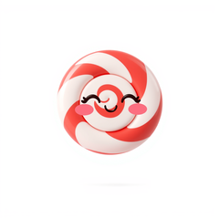

SugarCraft Core
MVC-style Model–Update–View TUI runtime

sugar-core is the Model–Update–View runtime that every SugarCraft TUI is built on. An app is a Model with four methods: init() starts it, update(Msg) folds an event into a new Model and an optional Cmd, view() renders the frame, and subscriptions() declares the timers it needs. Program owns the terminal, the ReactPHP event loop, input parsing and the renderer. The design mirrors charmbracelet/bubbletea; the Mirrors charmbracelet/bubbletea docblocks in src/ state where the PHP port diverges.
Install
composer require sugarcraft/sugar-coreRequires PHP 8.3 or newer, with ext-intl and ext-mbstring, both declared in composer.json. ext-intl is not optional in practice: Util\Width measures grapheme clusters through ICU, and without it an emoji or combining sequence is counted per code point, so the cell-budget checks in the renderers stop holding.
ext-pcntl is suggested. Without it, SIGWINCH resize, Ctrl-Z suspend and resume, and the SIGINT, SIGTERM and SIGHUP stop path degrade silently. On Windows, ext-ffi is required for raw console input.
Sibling SugarCraft packages track dev-master. A root manifest that accepts only stable releases must also set "minimum-stability": "dev" and "prefer-stable": true, or Composer cannot resolve the dependencies.
Quickstart
A complete program. The counter moves on ↑ and ↓ and quits on q. Run it in a terminal, or see examples/counter.php in the source tree.
use SugarCraft\Core\{Cmd, KeyType, Model, Msg, Program, Subscriptions};
use SugarCraft\Core\Msg\KeyMsg;
final class Counter implements Model
{
public function __construct(public readonly int $count = 0) {}
public function init(): ?\Closure { return null; }
public function subscriptions(): ?Subscriptions { return null; }
public function update(Msg $msg): array
{
if ($msg instanceof KeyMsg) {
return match (true) {
$msg->type === KeyType::Char && $msg->rune === 'q' => [$this, Cmd::quit()],
$msg->type === KeyType::Up => [new self($this->count + 1), null],
$msg->type === KeyType::Down => [new self($this->count - 1), null],
default => [$this, null],
};
}
return [$this, null];
}
public function view(): string
{
return "count: $this->count\n(↑/↓ to change, q to quit)";
}
}
(new Program(new Counter()))->run();The first frame, before any key is pressed:
count: 0
(↑/↓ to change, q to quit)Press ↑ once and the first line reads count: 1. A recording of this counter is in the Demos section at the end of this page.
view() is called again after every change, and the renderer repaints only what changed. run() blocks until a Cmd::quit() ends the loop, then returns the final Model. When stdin reaches end-of-file, the program also quits cleanly with exit code 0, so echo | php counter.php runs to completion instead of idling.
Concepts
The loop
Model is immutable. update() never mutates the receiver; it returns a new Model, so old values stay valid for snapshots, undo and replay. A Cmd is a closure that returns a Msg or null. The runtime runs it asynchronously, and its result re-enters update() as an ordinary message. view() is pure: the same Model must produce the same frame. Side effects belong in a Cmd.
Keystrokes, timers, signals and Cmd results all reach the model as Msgs. The runtime decides when to render: a frame is armed when the view becomes dirty and is capped by ProgramOptions::$framerate (60 frames per second by default), so an idle program does no render work.
The renderer owns stdout
Anything printed directly from update() or view() is overwritten by the next frame. To write above the program region, return Cmd::println(), or Cmd::raw() for bytes written verbatim. The default renderer is line-diff: it repaints only the rows that changed, inside a DEC 2026 synchronized-output update (ProgramOptions::$synchronizedOutput, on by default). Pass cellDiffRenderer: true to opt into the per-cell diff, the "cursed" renderer, which also skips unchanged cells inside a changed row and so saves bandwidth on slow links.
Alt-screen and inline mode
The default paints over the current screen. useAltScreen: true takes over the alternate screen, and the previous content returns when the program exits. inlineMode: true keeps output in the shell's scrollback: the first frame saves the cursor, and each later frame restores it and clears to the end of the screen before drawing.
Terminal ownership and signals
Program::run() switches the terminal to raw mode and restores it in a finally block. A die() or exit() that skips those blocks is caught by a shutdown backstop armed in setupTerminal(). Pass catchPanics: false only when your own code restores the terminal on bailout paths. While raw mode is active, Ctrl+C is an ordinary key, so update() decides what it means.
SIGWINCH, SIGTSTP and SIGCONT arrive as Msg\WindowSizeMsg, Msg\SuspendMsg and Msg\ResumeMsg. SIGINT, SIGTERM and SIGHUP unwind the loop cleanly and record the signal number N, which Program::stopSignal() returns. run() then returns normally, and the script sets the shell's 128+N exit code itself: exit($program->stopSignal() === null ? 0 : 128 + $program->stopSignal()). After SIGINT that is 130. A script that returns from run() without that line exits 0.
Untrusted input
Bracketed paste is sanitized by default. Escape sequences, C1 controls and the two zone sentinels (U+E000 and U+E001) are stripped before the payload reaches update() as a Msg\PasteMsg, so paste is not guaranteed to be byte-identical to what was copied. Set sanitizePaste: false only when your app contains the payload itself. Processes launched from user data use the argv form of proc_open(), never a shell string.
Clean untrusted text and fit it to a column
Util\Sanitize::untrustedForDisplay() removes escape sequences, renders bidi and zero-width characters as visible <U+XXXX> markers, and normalizes carriage-return line ends. Util\Width measures and fits text in terminal cells, never bytes. Width::string() counts cells, truncateEllipsis() cuts to a cell budget, and padRight(), wrap() and wrapAnsi() keep text aligned.
use SugarCraft\Core\Util\{Color, ColorProfile, Sanitize, Width};
// Strip escapes and control characters from text that came from outside the app.
$safe = Sanitize::untrustedForDisplay("hi\x1b[31m there\x07 \u{1F600}");
// Measure and fit by terminal cells, not bytes.
$row = Width::padRight(Width::truncateEllipsis($safe, 12), 12);
echo '[' . $row . "] cells=", Width::string($row), "\n";
$accent = Color::hex('#ff6b6b');
echo $accent->toHex(), ' ', var_export($accent->isDark(), true), "\n";
echo ColorProfile::detect(null, STDOUT)->name, "\n";Tasks
Run a full-screen program
Pass options to the constructor. Named arguments are the shortest form:
use SugarCraft\Core\{Cmd, Model, Msg, MouseMode, Program, ProgramOptions, Subscriptions};
use SugarCraft\Core\Msg\KeyMsg;
final class Counter implements Model
{
public function __construct(public readonly int $count = 0) {}
public function init(): ?\Closure { return null; }
public function subscriptions(): ?Subscriptions { return null; }
public function update(Msg $msg): array
{
return $msg instanceof KeyMsg && $msg->rune === 'q' ? [$this, Cmd::quit()] : [$this, null];
}
public function view(): string
{
return "count: {$this->count} (q to quit)";
}
}
$program = new Program(
new Counter(),
new ProgramOptions(useAltScreen: true, framerate: 30.0, mouseMode: MouseMode::CellMotion),
);
$final = $program->run(); // blocks until the loop stops, then returns the last ModelThe fluent builder carries the same options and checks their types, and it rejects a framerate of zero or less and an escapeDelay that is negative or not finite: ProgramOptions::builder()->withUseAltScreen(true)->build().
Schedule recurring work with subscriptions
Return a Subscriptions set from subscriptions(). After each update() the runtime compares it with the live set: new ids start, dropped ids are canceled, and an id whose params or producer change is re-armed. withTick() fires every N seconds, withKey() polls at an interval (0.1 seconds by default), withSignal() handles a POSIX signal, and withCustom(string $id, array $params, Closure $produce) registers a Kind::Custom subscription keyed by its id. The clock below keeps a one-second timer running while the model is alive:
use SugarCraft\Core\{Cmd, KeyType, Model, Msg, Program, Subscriptions};
use SugarCraft\Core\Msg\KeyMsg;
final class Second implements Msg {}
final class Clock implements Model
{
// One stable producer: a new closure on every subscriptions() call would
// look like a new subscription and restart the timer on every update.
private static ?\Closure $second = null;
public function __construct(public readonly int $seconds = 0) {}
public function init(): ?\Closure { return null; }
// Reconciled after every update(): the 'clock' timer runs while this
// returns it and is canceled when a later call omits it.
public function subscriptions(): ?Subscriptions
{
self::$second ??= static fn (): Msg => new Second();
return (new Subscriptions())->withTick('clock', 1.0, self::$second);
}
public function update(Msg $msg): array
{
if ($msg instanceof Second) {
return [new self($this->seconds + 1), null];
}
if ($msg instanceof KeyMsg && $msg->type === KeyType::Char && $msg->rune === 'q') {
return [$this, Cmd::quit()];
}
return [$this, null];
}
public function view(): string
{
return "elapsed: {$this->seconds}s (q to quit)";
}
}
(new Program(new Clock()))->run();For a single delayed Msg, return Cmd::tick(float $seconds, \Closure $produce). Cmd::cancellableTick() returns a TickHandle whose cancel() stops the timer before it fires.
Run CPU-bound work off the loop
WorkerPool runs tasks in child processes, four at a time by default. A task must be a serializable callable, such as the static method array [Thumbnailer::class, 'render'] or an invokable object. A string, which names a global function, is refused with an InvalidArgumentException when dispatched. A Closure cannot cross the process boundary, so dispatching one rejects its promise with a serialization error: at once when a worker is free, or later, when the queued job leaves the queue because every worker is busy. Cmd\WorkerCmd::run() turns each outcome into exactly one message: a SugarCraft\Core\Msg\WorkerResultMsg on success or a SugarCraft\Core\Msg\ExceptionMsg on failure.
use SugarCraft\Core\Cmd\WorkerCmd;
use SugarCraft\Core\WorkerPool;
// $pool is a WorkerPool built on the loop the Program runs on: new WorkerPool($loop).
return [$this, WorkerCmd::run($pool, [Thumbnailer::class, 'render'])];Navigate with a screen stack
Implement ScreenStackCapable on your root model, or use RootModelWithScreenStack, a final class that routes the screen messages and delegates init(), update() and view() to the active screen. A screen is a Screen value holding a Model, an optional title and optional enter and exit hooks. Navigate with the invokable Cmds PushScreenCmd and PopScreenCmd, both in SugarCraft\Core\Cmd. Program runs only Closure commands, so wrap each object with \Closure::fromCallable() before returning it from update(); returning the bare object throws a TypeError:
use SugarCraft\Core\Screen;
use SugarCraft\Core\Cmd\{PopScreenCmd, PushScreenCmd};
// Inside a root model that implements ScreenStackCapable or uses RootModelWithScreenStack:
return [$this, \Closure::fromCallable(new PushScreenCmd(new Screen($detail, title: 'Item 1')))];
// From the detail screen, to go back one level:
return [$this, \Closure::fromCallable(new PopScreenCmd())];Map keys to actions
Keys\KeyBindings maps action names to key tokens, so one registry answers "did this press trigger this action", and user overrides hang off the registry rather than off each call site. Tokens are lowercase: a letter is its rune, a space is space, and other keys use their KeyType value, such as up. Matching looks at press events only and ignores case. Modifier chords are not part of the vocabulary, so a bare q binding also matches Ctrl+Q.
use SugarCraft\Core\{Cmd, KeyType, Model, Msg, Subscriptions};
use SugarCraft\Core\Keys\KeyBindings;
use SugarCraft\Core\Msg\KeyMsg;
final class Counter implements Model
{
private static ?KeyBindings $keys = null;
public function __construct(public readonly int $count = 0) {}
public function init(): ?\Closure { return null; }
public function subscriptions(): ?Subscriptions { return null; }
private static function keys(): KeyBindings
{
return self::$keys ??= KeyBindings::fromMap([
'quit' => ['q'],
'up' => ['up', 'k'],
'down' => ['down', 'j'],
]);
}
public function update(Msg $msg): array
{
if ($msg instanceof KeyMsg) {
$keys = self::keys();
if ($keys->matches($msg, 'quit')) {
return [$this, Cmd::quit()];
}
if ($keys->matches($msg, 'up')) {
return [new self($this->count + 1), null];
}
if ($keys->matches($msg, 'down')) {
return [new self($this->count - 1), null];
}
}
return [$this, null];
}
public function view(): string
{
return "count: {$this->count}";
}
}
// Tests drive update() directly, with no terminal and no event loop.
$model = new Counter();
[$model, $cmd] = $model->update(new KeyMsg(KeyType::Up));
echo $model->count, ' ', var_export($cmd === null, true), "\n";
[$model, $cmd] = $model->update(new KeyMsg(KeyType::Char, 'k'));
echo $model->count, "\n";
[$model, $cmd] = $model->update(new KeyMsg(KeyType::Char, 'Q'));
echo var_export($cmd !== null, true), "\n";API reference
The source tree holds 162 PHP files under src/. The runtime types live in the root namespace SugarCraft\Core\, terminal and event messages in SugarCraft\Core\Msg\, and helpers in SugarCraft\Core\Util\. The tables below group the public surface by area. Each row names the class and its role, followed by its key members; signatures are abbreviated. The class docblocks hold the full contracts.
Model, Msg and Cmd
| Type | Role | Key members |
|---|---|---|
Model | Application contract (interface) | init(): ?\Closure · update(Msg): array · view(): string|View · subscriptions(): ?Subscriptions |
SubscriptionCapable | Trait supplying subscriptions(): null | Use it when the model needs no timers |
Msg | Marker interface for every message | Concrete classes sit in Msg\, or in the root namespace for orchestration messages such as BatchMsg and SequenceMsg |
Msg\KeyMsg | A parsed key press | __construct(KeyType $type, string $rune = '', bool $alt = false, bool $ctrl = false, bool $shift = false) |
Msg\MouseMsg and subclasses | Mouse press, release, motion and wheel | x, y, button, action, modifiers |
Cmd | Factory of Cmds, each a closure returning ?Msg | quit() · batch(...$cmds) · sequence(...$cmds) · tick(float, \Closure) · cancellableTick(float, \Closure): TickHandle · every(float, \Closure) · send(Msg) · promise(\Closure, ?float) · exec(string|array, bool, ?\Closure) |
TickHandle | A cancellable one-shot timer | cmd(): \Closure · cancel(): void · isCancelled(): bool |
Cmd\PushScreenCmd, Cmd\PopScreenCmd | Screen-stack navigation as invokable Cmds | \Closure::fromCallable(new PushScreenCmd(Screen)) · \Closure::fromCallable(new PopScreenCmd()) |
Program and the loop
| Type | Role | Key members |
|---|---|---|
Program | Runtime orchestrator: terminal, loop, input, render | __construct(Model, ProgramOptions = new ProgramOptions()) · run(): Model · send(Msg): void · quit() · kill() · wait(): bool · model(): Model · println(string ...) · printf(string, ...) · forceRepaint() · lastFrameDuration(): float |
Program hooks | Fluent hooks that return the Program | withLogger(object) · withExceptionHandler(\Closure) · withFrameDiffHook(\Closure) · withRecorder(?Recorder) |
ProgramOptions | Readonly options for a Program | 27 constructor parameters, listed under Configuration · builder(): ProgramOptionsBuilder |
ProgramOptions\ProgramOptionsBuilder | Fluent mirror of the options | withUseAltScreen(), withFramerate(), withMouseMode(), withEscapeDelay(), and the rest · build() |
Subscriptions, Subscription, Kind | Declarative timers, polled keys and signals | withTick() · withKey() · withSignal() · withCustom() · all() · has(). Kind cases: Tick, Key, Signal, Custom |
Screen, ScreenStack | Immutable screen stack for drill-down flows | ScreenStack::push() · pop() · current() · breadcrumb() · replaceCurrentModel() · count() |
ScreenStackCapable, RootModelWithScreenStack | Routes the stack to the active screen | screens(): ScreenStack |
Component, Composite | Parent-child lifecycle | onMount() · onUnmount() · Composite::withChildren() · children() · drainPendingCmds() |
Panes, Pane, Rect | Split-region bookkeeping for several viewports | Pane::view() clips content to the rectangle's rows and columns |
View | A frame with declarative extras | body, cursor, windowTitle, progressBar, and a foreground color override |
RevisionCapable | Optional view-memoization hook | revision(): int|string|null, used to skip an unchanged view |
WorkerPool, Cmd\WorkerCmd, Msg\WorkerResultMsg | Bounded pool of child processes for CPU-bound tasks | WorkerPool(LoopInterface, int $concurrency = 4, int $maxOutstandingJobs = 1024) · dispatch(callable|string): PromiseInterface (a string throws InvalidArgumentException; a Closure rejects the promise) · WorkerCmd::run(WorkerPool, callable|string): \Closure |
Recorder | Interface that captures a session | recordResize() · recordInputBytes() · recordOutput() · recordQuit() · close() |
Progress, ProgressBarState | Taskbar or window progress (OSC 9;4) | ProgressBarState cases: Remove, Normal, Error, Indeterminate, Warning |
Cursor, CursorShape | Cursor position and shape for a View | CursorShape cases: Block, Underline, Bar |
Renderer and terminal
| Type | Role | Key members |
|---|---|---|
Renderer | Turns each frame into the minimal output that repaints it | __construct($out, bool $inline, bool $cellDiff, bool $synchronized, ?Writer $writer) · render(string): void · reset(): void |
Writer | Ordered byte sink shared by the Program and its Renderer. Each worker process stdin has its own Writer, so pendingBytes() and isSaturated() do not count worker traffic | attach(LoopInterface) · write(string, float $deadline) · flush() · pendingBytes() · isSaturated(). Attached to a loop, it does not block; the pending cap defaults to 8 MiB |
Util\Tty | Portable facade over a raw-mode backend | isTty() · size() · enableRawMode() · restore() · Tty::onResize() · Tty::drainSignals() · Tty::restoreLast() |
Util\Tty\Backend | The raw-mode contract that each platform implements | isTty(), openTty(), size(), enableRawMode(), restore(), onResize(), drainSignals() |
Util\Tty\PosixBackend | POSIX termios backend, with the window-size query and /dev/tty handling | queryWinsize(int $fd) · openTty() · enableRawMode() · restore() |
Util\Tty\WindowsBackend | Windows console backend, using the Win32 console API through FFI | enableRawMode() · size() · onResize() · takePendingKeyBytes() |
Util\RawMode | Portable stty-based raw-mode toggle | RawMode::enable($stream) · RawMode::disable($stream) |
Util\TtyDetect | Stream terminal check | TtyDetect::isAtty($stream) |
Input and keys
| Type | Role | Key members |
|---|---|---|
InputReader | Stateful escape-sequence parser; keeps partial sequences across reads | parse(string): array · flushPending(): ?Msg · hasPendingEscape() · isPasting() · flushStalePaste(). Constants: MAX_PASTE_BYTES (1 MiB) and PASTE_IDLE_TIMEOUT (1.0 seconds) |
KeyType | Key identity (string-backed enum) | Printable Char; navigation Up, Down, Left, Right, Home, End, PageUp, PageDown; editing Enter, Escape, Tab, Backspace, Space, Delete, Insert; function keys F1 and up |
MouseMode | Which mouse events the terminal reports | Off, CellMotion (motion while a button is held), AllMotion (every motion) |
MouseButton, MouseAction | Button and action of a mouse event | Buttons Left, Middle, Right, WheelUp, WheelDown, Backward, Forward. Actions Press, Release, Motion |
Modifiers | Shift, alt and ctrl as a value object | of(bool $shift, bool $alt, bool $ctrl) · fromXtermMod(int) · toBitfield() · has(int) |
Keys\KeyBindings | Immutable action-to-token registry | fromMap(array) · defaults() · withOverride(string $id, string ...$tokens) · matches(KeyMsg, string $id) · tokenOf(KeyMsg) · label(string $id) |
Styling and color
| Type | Role | Key members |
|---|---|---|
Util\Ansi | Builders for SGR, cursor, hyperlink, graphics and mode sequences | sgr(int ...$codes) · fg256(int) · fgRgb(int, int, int) · cursorTo(int, int) · hyperlink(string, string, string) · syncBegin() · strip(string) |
Util\Color | Immutable color value with conversions and blending | Constructors rgb(), hex(), ansi(), ansi256(), parse(), hsl(), hsv() · toHex() · lighten(), darken(), alpha(), blend() · luminance(), isDark() · toFg(ColorProfile), toBg(ColorProfile) |
Util\ColorProfile | Terminal color tier (enum) | Cases NoTty, Ascii, Ansi, Ansi256, TrueColor · detect() · detectTerminal() · supportsAnsi(), supports256(), supportsTrueColor() |
Util\Palettes | Named color schemes | Constants DRACULA, ONE_DARK, GITHUB_DARK · hex(string $scheme, string $name) |
Util\Width | Cell measurement and fitting, ANSI-aware | string() · truncate() · truncateEllipsis() · truncateMiddle() · padRight(), padLeft(), padCenter() · wrap(), wrapWords(), wrapAnsi() · truncateAnsi(), takeAnsi(), dropAnsi() |
Util\Clamp, Util\Format | Bounded numbers; human-readable sizes and durations | Clamp::int(), float(), nonNeg(), byte() · Format::siBytes(), iecBytes(), duration(), scaleValue() |
Safety, processes and storage
| Type | Role | Key members |
|---|---|---|
Util\Sanitize | The vocabulary for untrusted strings | controlChars() · cellValue() · untrusted() · untrustedForDisplay() · untrustedForMarkedFrames() · visibleControls() · stripInvisibleFormatting() |
Util\Proc\BoundedShutdown | Child teardown ladder: SIGTERM, bounded wait, SIGKILL, bounded wait, reap | terminateBounded() · escalate() · terminateBoundedAsync() · terminatePid() · groupEmpty() |
Util\Semaphore | Bounded-concurrency permits over promises | Semaphore::new(int) · acquire() · run(callable) · release() · close() |
Util\LockFile | Cross-process advisory lock with a bounded wait | LockFile::on(string) · tryAcquire() · tryAcquireAsync($loop) · acquire(float) |
Util\LruMap | Fixed-capacity least-recently-used map | new(int $capacity, ?int $maxCapacity) · get() promotes · peek() reads without promoting · put() · evictions() · withTtl() |
Undo\UndoStack | Bounded undo and redo history | UndoStack::new(int $limit = 100) · push() · undo() · redo() · canUndo(), canRedo() |
Util\AtomicJsonFile | Crash-safe JSON files, written as a whole | AtomicJsonFile::new(string $path) · read() · write(array) · mutate(\Closure) |
Util\PathJail | Confines a relative path to a root directory | resolve() · resolveForCreate() · resolveDir() · confine() · within() · below() |
Util\SecretStore | Reads a secret from the operating system keychain | supported() · lookup(string, string) · forget(string, string) |
Util\Open, Util\Editor, Util\Clipboard\Clipboard | Hand-off to the desktop, the user's editor and the system clipboard | Open::url(), Open::file() · Editor::edit(), Editor::command() · Clipboard::copy(), Clipboard::osc52() |
Util\Executable\Locator | Finds an executable on the search path | locate() · exists() · search() |
Util\Json, Util\TokenEstimate | Strict JSON decoding; rough token counts for prompts | Json::decodeArray() · TokenEstimate::ofText(), ofMessages(), ofToolSchemas() |
Config\Interpolate, Syntax\RegexHighlighter | Variable expansion in config values; a regex tokenizer for code | Interpolate::expand() · RegexHighlighter::languageForPath(), tokenize() |
I18n\T, Lang | Message lookup with locale fallback | T::t(key, params) · T::setLocale() · T::register() · Lang::t() |
Util\LegacyEnv, Util\LegacyPaths | Rename shims for old environment variables and data directories | LegacyEnv::import() · LegacyPaths::migrate() |
The tables above group the runtime by concept. The listing below is generated from the PHPDoc of every public type under src/, grouped by namespace; types and methods marked @internal are left out.
SugarCraft\Core
AsyncCmd final class
Sentinel Msg that wraps an async promise. Mirrors charmbracelet/bubbletea.Cmd — the async command system.
| Method | Summary |
|---|---|
__construct(public PromiseInterface $promise, public ?float $timeoutSeconds = null, public ?\Closure $onFailure = null) |
Cmd final class
Helper Cmd factories. A Cmd is Closure(): ?Msg — an asynchronously executed piece of work whose returned Msg (if any) is fed back into the program loop.
| Method | Summary |
|---|---|
static quit(): \Closure | Quit the program when executed. |
static suspend(): \Closure | Suspend the program (Ctrl-Z / SIGTSTP semantics). Tears down the terminal, re-raises SIGTSTP on the process group, and on SIGCONT restores the terminal and dispatches a ResumeMsg. Mirrors charmbracelet/bubbletea.Suspend. |
static interrupt(): \Closure | Quit cleanly with SIGINT-style "interrupt" semantics — same teardown path as Ctrl-C but distinguishable from a graceful quit() for downstream tooling. Mirrors tea.Interrupt. |
static batch(?\Closure ...$cmds): \Closure | Combine several Cmds into one. The runtime executes them concurrently; each returned Msg is dispatched independently. null entries are silently dropped so callers can write Cmd::batch($maybeCmd, $other). |
static sequence(?\Closure ...$cmds): \Closure | Run Cmds strictly in order, one per loop tick: each returned Msg is dispatched (and processed by the model's update()) before the next Cmd starts, but the sequence does NOT complete inside this call — later steps land on later ticks. Use this when ordering matters — a setForegroundColor() should land before the colour-dependent render that follows it. |
static every(float $seconds, \Closure $produce): \Closure | Wall-clock-aligned periodic tick — shared per interval. Every every($d, ...) consumer with the same period rides ONE periodic timer chain aligned to wall-clock multiples of $d seconds, fanned out to each registered producer; re-registering the same produce closure keeps its existing seat (no stacking). A producer that returns null steps down — its deliveries stop and the timer tears itself down when the last consumer leaves. This synchronised cadence is the shipped contract (audit sugar-core-004). |
static send(Msg $msg): \Closure | Wrap a raw Msg in a Cmd so it can be returned from update() chains that need to inject a synchronous follow-up event. |
static tick(float $seconds, \Closure $produce): \Closure | Schedule $produce to run after $seconds elapses on the loop. Whatever Msg it returns is dispatched into update(); return null to skip the dispatch. |
static cancellableTick(float $seconds, \Closure $produce): TickHandle | Like tick(), but returns a TickHandle the model keeps so it can cancel the tick before it fires. Issue the Cmd with $handle->cmd(); call $handle->cancel() to drop the pending dispatch (including one not yet armed on the loop). |
static windowSize(): \Closure | Ask the Program for the current terminal size. The Program resolves it when the Cmd runs and dispatches a \SugarCraft\Core\Msg\WindowSizeMsg built from the live size, honouring ProgramOptions::$windowSize when set. Use it to re-sync a model after it was built without a size. |
static promise(\Closure $factory, ?float $timeoutSeconds = null): \Closure | Wrap an async operation in a Cmd. The $factory should return a React\Promise\PromiseInterface<?Msg>. The promise's resolved Msg (if any) will be dispatched to update(). Rejected promises dispatch ExceptionMsg. |
static raw(string $bytes): \Closure | Write raw escape-sequence bytes to the Program's output stream. The renderer's diff state is *not* invalidated, so callers should use this for cursor-area-neutral effects (window title, OSC inline images, etc.) and call Program::forceRepaint() themselves if they intentionally clobber the painted region. (Pre-sc-35 this instruction named Renderer::reset(), which no public path reaches — forceRepaint() is the reachable seam, DX-05.) |
static println(string $text): \Closure | Print a line above the Program's region. Convenient for non- alt-screen "inline" programs that want to log progress without disturbing their rendered view. Mirrors tea.Println. |
static printf(string $fmt, mixed ...$args): \Closure | printf-style companion to println() — formats $fmt with $args and prints the result above the program region. Mirrors tea.Printf. |
static exec(string|array $command, bool $captureOutput = false, ?\Closure $onComplete = null): \Closure | Run an external command with the TTY released, then resume the program. The runtime tears down raw mode + alt screen + cursor hide before launching the child, and restores them once it exits. The result is dispatched to the model as \SugarCraft\Core\Msg\ExecMsg. |
static requestCursorPosition(): \Closure | Ask the terminal where the cursor currently is. The reply will be parsed by the input reader and dispatched as a \SugarCraft\Core\Msg\CursorPositionMsg. Mirrors tea.RequestCursorPosition. |
static requestForegroundColor(): \Closure | Ask the terminal for its current default foreground colour. The reply (OSC 10) becomes a \SugarCraft\Core\Msg\ForegroundColorMsg. |
static requestBackgroundColor(): \Closure | Ask the terminal for its current default background colour. The reply (OSC 11) becomes a \SugarCraft\Core\Msg\BackgroundColorMsg. Pair with \SugarCraft\Core\Msg\BackgroundColorMsg::isDark() to pick a contrasting theme. |
static requestCursorColor(): \Closure | Ask the terminal for its current cursor colour. The reply (OSC 12) becomes a \SugarCraft\Core\Msg\CursorColorMsg. |
static requestTerminalVersion(): \Closure | Ask the terminal to identify itself (XTVERSION). The DCS reply becomes a \SugarCraft\Core\Msg\TerminalVersionMsg carrying the human-readable terminal-name + version string. |
static requestMode(int $mode, bool $private = true): \Closure | Ask the terminal whether a given mode is currently set (DECRQM). The reply becomes a \SugarCraft\Core\Msg\ModeReportMsg. Pass private: true (default) for DEC private modes, false for ANSI modes. |
static setClipboard(string $text, string $selection = 'c'): \Closure | Copy $text to the terminal's clipboard via OSC 52. Default selection is the system clipboard (c); pass p for X11 primary or s for secondary. |
static readClipboard(string $selection = 'c'): \Closure | Ask the terminal for the contents of the named selection. The reply (OSC 52) becomes a \SugarCraft\Core\Msg\ClipboardMsg with the decoded text. |
static setWindowTitle(string $title, bool $icon = false): \Closure | Set the terminal window title via OSC 2. Pass $icon: true to emit OSC 0 instead, which sets icon name + window title in terminals that distinguish them (xterm, iTerm2). |
static setWorkingDirectory(string $path, string $host = ''): \Closure | Tell the terminal the shell's current working directory via OSC 7. Used by iTerm2 / Terminal.app / WezTerm for new-tab and split-pane "same cwd" semantics. |
static setProgressBar(ProgressBarState $state, int $percent = 0): \Closure | Set the terminal's taskbar-progress indicator (OSC 9;4). Pass ProgressBarState::Remove to clear it. $percent is clamped to 0-100 and only meaningful for Normal / Error / Warning states. |
static pushKittyKeyboard(int $flags): \Closure | Push a Kitty progressive-keyboard flag layer. Use the bit constants on Msg\KeyboardEnhancementsMsg (DISAMBIGUATE, REPORT_EVENT_TYPES, REPORT_ALTERNATES, REPORT_ALL_AS_ESC, REPORT_ASSOCIATED). Pair with popKittyKeyboard() on teardown. |
static popKittyKeyboard(int $n = 1): \Closure | Pop $n Kitty keyboard flag layers. |
static requestKittyKeyboard(): \Closure | Ask the terminal for the currently active Kitty keyboard flags. The reply becomes a \SugarCraft\Core\Msg\KeyboardEnhancementsMsg. |
static enterAltScreen(): \Closure | Switch into the alt screen (CSI ?1049h). |
static exitAltScreen(): \Closure | Leave the alt screen (CSI ?1049l). |
static clearScreen(): \Closure | Erase the entire screen and home the cursor. |
static showCursor(): \Closure | Show the cursor (CSI ?25h). |
static hideCursor(): \Closure | Hide the cursor (CSI ?25l). |
static enableMouseCellMotion(): \Closure | Enable cell-motion mouse tracking (button-only motion + SGR encoding). |
static enableMouseAllMotion(): \Closure | Enable all-motion mouse tracking (every move regardless of button state). |
static disableMouse(): \Closure | Disable mouse tracking — clears both cell-motion and all-motion modes. Safe to call when no tracking is active. |
static enableReportFocus(): \Closure | Enable focus-in/out reporting (CSI ?1004h). |
static disableReportFocus(): \Closure | |
static enableBracketedPaste(): \Closure | Enable bracketed paste mode (CSI ?2004h). |
static disableBracketedPaste(): \Closure | |
static scrollUp(int $n = 1): \Closure | Scroll the active region up $n lines. |
static scrollDown(int $n = 1): \Closure | Scroll the active region down $n lines. |
static setForegroundColor(int $r, int $g, int $b): \Closure | Set the terminal's default foreground colour (OSC 10). Persists for the rest of the program — terminals don't auto-restore on exit. Pair with resetForegroundColor() on teardown if you need to roll back. |
static setBackgroundColor(int $r, int $g, int $b): \Closure | |
static resetForegroundColor(): \Closure | Reset the terminal's default foreground to whatever the user's profile dictates (OSC 110). |
static resetBackgroundColor(): \Closure |
Component interface
A Component is a Model that participates in a component tree with explicit mount/unmount lifecycle hooks.
| Method | Summary |
|---|---|
onMount(): ?\Closure | Fired once when the component is first mounted into a tree. Return a Cmd to run immediately (e.g. to start a subscription), or null for no-op. |
onUnmount(): ?\Closure | Fired once when the component is removed from a tree. Return a Cmd to run immediately (e.g. to cancel a subscription), or null for no-op. |
ComponentAddressedMsg interface
Messages that carry a component id for routing within a Composite.
| Method | Summary |
|---|---|
componentId(): ?string |
Composite final class
A Composite is a Model that owns a set of child Components.
| Method | Summary |
|---|---|
onMount(): ?\Closure | A Composite has no mount Cmd of its own: its children mount and unmount through reconcileAdd()/reconcileRemove() as they enter and leave, so the tree-level hooks are the no-ops. |
onUnmount(): ?\Closure | |
__construct(private readonly array $children = [], private readonly array $pendingCmds = []) | |
init(): ?\Closure | |
update(Msg $msg): array | Handle a Msg. |
view(): string | |
withChildren(array $children): self | Return a new Composite with the given children merged in. Existing children with the same id are replaced (the incoming map wins on collisions, like array_union). Lifecycle Cmds this node has already queued are carried across untouched — they belong to the same tree, and the end-of-cycle drain still owns running them. |
children(): array | |
pendingCmds(): array | |
drainPendingCmds(): array | Collect the lifecycle Cmds queued in this node and in every nested Composite, returning the tree rebuilt with all queues cleared. |
Cursor final class
Cursor description carried on a View. A null cursor on the View hides the cursor; setting a Cursor positions and shapes it.
| Method | Summary |
|---|---|
__construct(public readonly ?int $row = null, public readonly ?int $col = null, public readonly CursorShape $shape = CursorShape::Block, public readonly bool $blink = false, public readonly ?Util\Color $color = null) |
CursorShape enum
DECSCUSR cursor-shape values used by View::$cursor and the \SugarCraft\Core\Util\Ansi::cursorShape() helper.
Cases: Block · Underline · Bar
ExecRequest final class
Internal sentinel produced by Cmd::exec(). Carries the external-process spec the Program will run with TTY suspended, plus an optional callback the runtime invokes once the child exits — the callback can shape the resulting Msg\ExecMsg (e.g. produce a typed Msg the model recognises).
| Method | Summary |
|---|---|
__construct(public readonly string|array $command, public readonly bool $captureOutput = false, public readonly ?\Closure $onComplete = null) |
ImagePlacement final class
A pixel-graphics image registered in a View's image layer: the raw protocol bytes plus the cell footprint they occupy. The footprint lets the runtime know which cells an image covers, so it can surgically clear just those cells when the image moves or disappears (instead of repainting the whole screen).
| Method | Summary |
|---|---|
__construct(public string $bytes, public int $widthCells, public int $heightCells) |
InputReader final class
Stateful byte-stream parser. Feed it raw bytes via parse(); it returns zero or more typed Msg values per call. Partial escape sequences are buffered across calls so split reads (common with stdin) still produce correct keys.
| Method | Summary |
|---|---|
__construct(private readonly bool $sanitizePaste = true) | |
parse(string $bytes): array | |
flushPending(): ?Msg | Promotes a parked key once the escape timeout has passed with no follow-up byte: a lone ESC is the Escape key, and a lone ESC P (held for a possible XTVERSION reply) is Alt+Shift+P, as it decodes when the next byte is not >. |
hasPendingEscape(): bool | True when the parser is holding a lone ESC, or a lone ESC P, awaiting disambiguation. \SugarCraft\Core\Program polls this so it can promote the held key after a short timeout via flushPending(). |
isPasting(): bool | True while inside a bracketed-paste envelope whose end marker has not arrived yet. \SugarCraft\Core\Program polls this after each read to arm the PASTE_IDLE_TIMEOUT stale-paste recovery. |
flushStalePaste(): array | Close a paste envelope whose CSI 201~ never came, exactly as the marker would have: a PasteEndMsg followed by a PasteMsg with whatever was collected — including a held-back tail that looked like the start of the marker, since with the marker gone it was pasted text. Afterwards the reader is back in key mode, so the next byte is a keystroke again. Returns an empty list when no paste is open. |
KeyType enum
Logical key types emitted by the input parser. KeyType::Char carries the actual rune in the Msg\KeyMsg::$rune field; all other cases are named keys whose rune is irrelevant.
Cases: Char · Up · Down · Left · Right · Begin · Find · Select · Extended · Enter · Escape · Tab · Backspace · Space · Delete · Insert · Home · End · PageUp · PageDown · F1 · F2 · F3 · F4 · F5 · F6 · F7 · F8 · F9 · F10 · F11 · F12 · F13 · F14 · F15 · F16 · F17 · F18 · F19 · F20 · F21 · F22 · F23 · F24 · F25 · F26 · F27 · F28 · F29 · F30 · F31 · F32 · F33 · F34 · F35 · F36 · F37 · F38 · F39 · F40 · F41 · F42 · F43 · F44 · F45 · F46 · F47 · F48 · F49 · F50 · F51 · F52 · F53 · F54 · F55 · F56 · F57 · F58 · F59 · F60 · F61 · F62 · F63 · Kp0 · Kp1 · Kp2 · Kp3 · Kp4 · Kp5 · Kp6 · Kp7 · Kp8 · Kp9 · KpDecimal · KpDivide · KpMultiply · KpSubtract · KpAdd · KpEnter · KpEqual · KpSeparator · KpLeft · KpRight · KpUp · KpDown · KpPageUp · KpPageDown · KpHome · KpEnd · KpInsert · KpDelete · KpBegin · MediaPlay · MediaPause · MediaPlayPause · MediaReverse · MediaStop · MediaFastForward · MediaRewind · MediaNext · MediaPrev · MediaRecord · LowerVolume · RaiseVolume · MuteVolume · CapsLock · ScrollLock · NumLock · PrintScreen · Pause · Menu · LeftShift · RightShift · LeftCtrl · RightCtrl · LeftAlt · RightAlt · LeftSuper · RightSuper · LeftHyper · RightHyper · LeftMeta · RightMeta · IsoLevel3Shift · IsoLevel5Shift
| Method | Summary |
|---|---|
static kittyFunctionalKeys(): array | Kitty progressive keyboard protocol functional-key codepoint table. Maps a Kitty PUA codepoint (0xE000+) to its KeyType. Codepoints not in this table are treated as printable Char by the input parser. |
Kind enum
Subscription kind taxonomy.
Cases: Tick · Key · Signal · Custom
Lang final class
Per-library translation facade for sugar-core.
ModeState enum
Reply states from a DECRPM (Mode Report) reply, returned in \SugarCraft\Core\Msg\ModeReportMsg::$state. Mirrors the values defined in xterm's ctlseqs reference and ECMA-48.
Cases: NotRecognized · Set · Reset · PermanentlySet · PermanentlyReset
| Method | Summary |
|---|---|
isActive(): bool | True when the mode is currently active (set or permanently set). |
Model interface
The Elm-architecture Model contract.
| Method | Summary |
|---|---|
init(): ?\Closure | Return an initial Cmd to run on startup, or null. |
update(Msg $msg): array | Handle a Msg, returning [nextModel, optionalCmd]. |
view(): string|View | Render the model. Return a plain string for the common case, or a View when you need per-frame control over cursor shape / position, window title, etc. — matches Bubble Tea v2's tea.View struct. |
subscriptions(): ?Subscriptions | Declare the subscriptions this model wants. |
Modifiers final class
Immutable bitfield wrapping the shift, alt, ctrl modifier set for a key event. Mirrors charmbracelet/bubbletea.Key.Mod so existing code that reads KeyMsg::$alt / $ctrl keeps working while new code can pattern-match on a single value.
| Method | Summary |
|---|---|
__construct(public readonly bool $shift = false, public readonly bool $alt = false, public readonly bool $ctrl = false) | |
static none(): self | |
static of(bool $shift = false, bool $alt = false, bool $ctrl = false): self | |
static fromXtermMod(int $mod): self | Decode the modifier byte from an xterm modified-CSI sequence (CSI 1 ; <mod> A etc.). The standard says mod = 1 + (1·shift + 2·alt + 4·ctrl). |
toBitfield(): int | |
isEmpty(): bool | |
has(int $modifier): bool | Test one SHIFT / ALT / CTRL bit. The single predicate behind the msg-level \SugarCraft\Core\Msg\Modifiable::has() idiom, so key and mouse events answer modifier questions the same way regardless of which internal shape their carrier stores. |
MouseAction enum
Phase of a mouse event reported by a Msg\MouseMsg.
Cases: Press · Release · Motion
MouseButton enum
Which physical button (or wheel direction) triggered a Msg\MouseMsg.
Cases: None · Left · Middle · Right · WheelUp · WheelDown · Backward · Forward
MouseMode enum
How the program asks the terminal to report mouse events.
Cases: Off · CellMotion · AllMotion
Msg interface
Marker interface for messages flowing through the Program loop.
Pane final class
A Pane wraps a Model and knows its bounds within the terminal grid.
| Method | Summary |
|---|---|
__construct(public Model $model, public Rect $bounds) | |
update(Msg $msg): array | Route a message to the underlying model, returning an updated Pane. |
view(): string | Render the pane's content positioned at its bounds origin. |
Panes final class
A Model that holds and composes multiple Panes.
| Method | Summary |
|---|---|
__construct(array $panes, int $activeIndex = 0) | |
init(): ?\Closure | |
update(Msg $msg): array | |
view(): string | Render all panes in sequence, each positioned at its origin. |
count(): int | The number of panes. |
activeIndex(): int | The index of the currently active (focused) pane. |
panes(): array | The list of panes. |
subscriptions(): ?Subscriptions |
Program final class
The Elm-architecture runtime: ties together input, model, render, and the event loop.
| Method | Summary |
|---|---|
__construct(Model $initialModel, private readonly ProgramOptions $options = new ProgramOptions()) | Wrap a Model with runtime options. |
setRecorder(?Recorder $recorder): void | Tee the program's input bytes, output bytes, and lifecycle events to the given Recorder. Pass null to detach. |
withRecorder(?Recorder $recorder): self | |
withLogger(object $logger): self | Attach a logger to receive program lifecycle events. Returns a cloned program with the logger stored. |
withExceptionHandler(\Closure $handler): self | Override the exception handler that receives any uncaught throwable arising from user code during the loop: model init()/update()/view(), the filter, every subscription/TickRequest produce closure, every Cmd/Sequence callback, signal arms, and rejected AsyncCmd promises. The default re-throws. |
withFrameDiffHook(\Closure $hook): self | Install a per-frame diff hook. After every frame the renderer paints, the hook receives the body the previous frame painted (null before the first paint, and after a reset such as forceRepaint()) and the body this frame painted. Both are the bodies after image markers are resolved, so the hook sees what the text renderer diffed. Equal bodies mean the text grid did not change; the cursor and the image layer are not part of the body, so they can change the screen while the bodies stay equal. The hook is not called in headless mode (ProgramOptions::withoutRenderer). A throw from the hook goes to the exception handler, like any other user-code seat. |
lastFrameDuration(): float | Return the duration in seconds of the last rendered frame. |
forceRepaint(): void | Force a full repaint on the next update cycle: reset the renderer's diff state and drop the frame caches WITHOUT writing any extra bytes, so the next frame re-emits the whole body even though it is identical to the last one the runtime remembers. |
model(): Model | Return the current model. |
getModel(): Model | |
run(): Model | Run the program loop until a QuitMsg is dispatched (or the loop is stopped externally). Returns the final Model. |
send(Msg $msg): void | Queue a Msg for dispatch. If the loop is running it is delivered on the next tick; otherwise it is buffered until run() drains pending messages. |
quit(): void | Cooperative shutdown — enqueues a QuitMsg. The next update() cycle observes it; the model can react to QuitMsg before the runtime tears down. Pair with kill() when you need an immediate hard-stop with no model interaction. |
kill(): void | Hard-stop the program. Unlike quit() (which routes through the message queue and lets the model react to QuitMsg on its next update tick), kill() stops the loop synchronously without notifying the model. |
wait(): bool | Block until the loop has stopped. Mirrors charmbracelet/bubbletea.Program.Wait. In PHP run() is itself a blocking call so this is mainly useful as a status query — it returns true if the program is no longer running. |
stopSignal(): ?int | Which signal asked the most recent run() to stop, or null when none did. |
releaseTerminal(): void | Release the terminal back to a cooked / line-buffered state so the caller can shell out to $EDITOR-style external commands without fighting the renderer for raw-mode keys. Pair with restoreTerminal() once the external command exits. |
restoreTerminal(): void | Re-acquire the terminal after a releaseTerminal() call: re-enter alt screen / raw mode / mouse / paste / focus modes exactly as run() did at startup, then trigger a full repaint on the next tick. |
println(string ...$parts): void | Print a single line above the program region. Equivalent to sending Cmd::println($text)() directly through the message queue, but reachable as an instance method for callers that hold a Program reference (matches bubbletea's Program.Println(...)). |
printf(string $format, mixed ...$args): void | Queue a PrintMsg with a formatted string. |
enableBracketedPaste(): void | Enable bracketed paste mode at runtime. |
disableBracketedPaste(): void | Disable bracketed paste mode at runtime. |
armTerminalRelease(): void | Public seam: arm the shutdown backstop before run() is ever entered. |
ProgramOptions final class
Tunables for Program. All fields are optional with sensible defaults.
| Method | Summary |
|---|---|
__construct(public readonly bool $useAltScreen = false, public readonly bool $catchInterrupts = true, public readonly bool $hideCursor = true, public readonly float $framerate = 60.0, public readonly MouseMode $mouseMode = MouseMode::Off, public readonly bool $reportFocus = false, public readonly bool $bracketedPaste = false, public readonly bool $unicodeMode = true, public readonly bool $inlineMode = false, public readonly bool $openTty = false, public readonly mixed $input = null, public readonly mixed $output = null, public readonly ?LoopInterface $loop = null, public readonly ?array $environment = null, public readonly ?array $windowSize = null, public readonly ?ColorProfile $colorProfile = null, public readonly bool $catchPanics = true, public readonly bool $withoutRenderer = false, public readonly ?\Closure $filter = null, public readonly bool $cellDiffRenderer = false, public readonly bool $withoutSignalHandler = false, public readonly ?Termios $termios = null, public readonly ?\Closure $subscriptions = null, public readonly bool $sanitizePaste = true, public readonly bool $exitOnStdinEof = true, public readonly bool $synchronizedOutput = true, public readonly float $escapeDelay = 0.05) | |
static builder(): ProgramOptions\ProgramOptionsBuilder | Start a fluent builder for ProgramOptions. |
Progress final class
Per-frame taskbar-progress description carried on a View. The runtime emits OSC 9;4 only when this value changes between frames so the terminal isn't spammed with redundant escapes.
| Method | Summary |
|---|---|
__construct(public readonly ProgressBarState $state, public readonly int $percent = 0) |
ProgressBarState enum
Taskbar-progress state values used by OSC 9;4 (the ConEmu / WezTerm / Windows-Terminal protocol). Pass to Cmd::setProgressBar().
Cases: Remove · Normal · Error · Indeterminate · Warning
ProgressReporter interface
Progress reporter interface for indicating task completion.
| Method | Summary |
|---|---|
report(int $current, int $total, ?string $label = null): void | Report progress of an operation. |
RawMsg final class
Sentinel returned by Cmd::raw(). The Program intercepts it and writes the bytes verbatim to its output stream without disturbing the renderer's diff state. Useful as an escape hatch for terminal features the framework doesn't wrap (e.g. iTerm2 inline images, OSC 7 cwd reporting). The sentinel never reaches the model: the dispatch arm writes the bytes and returns, so a consumer that branches on RawMsg inside update() sees nothing — that claim was the stale intercept text (sugar-core-038).
| Method | Summary |
|---|---|
__construct(public readonly string $bytes) |
Recorder interface
Tee target for Program input bytes, output bytes, and lifecycle events. Wired via Program::setRecorder().
| Method | Summary |
|---|---|
recordResize(int $cols, int $rows): void | |
recordInputBytes(string $bytes): void | |
recordOutput(string $bytes): void | |
recordQuit(): void | |
close(): void |
Rect final class
An axis-aligned rectangle within a terminal grid.
| Method | Summary |
|---|---|
__construct(public int $x, public int $y, public int $width, public int $height) | |
static fromSize(int $width, int $height): self | Create a 0,0 origin rect of the given dimensions. |
Renderer final class
Frame-diff renderer. Compares the new frame against the previously rendered frame and emits the smallest payload that gets the terminal to the new state, sparing both local CPU and (more importantly) SSH bandwidth on remote sessions.
| Method | Summary |
|---|---|
__construct($out, private readonly bool $inline = false, private readonly bool $cellDiff = false, private readonly bool $synchronized = true, ?Writer $writer = null) | |
setRecorder(?Recorder $recorder): void | Tee every byte chunk this renderer emits to the given recorder (or pass null to detach). Wired by Program::setRecorder(); direct callers shouldn't need this. |
render(string $frame): void | |
reset(): void |
RevisionCapable interface
Optional revision key for Models whose view() can be memoized.
| Method | Summary |
|---|---|
revision(): int|string|null | Return the current view revision, or null to opt out for this frame. |
RootModelWithScreenStack final class
Concrete root model that owns a ScreenStack and delegates view to the active screen while routing all ScreenStackPushedMsg / ScreenStackPoppedMsg infrastructure messages through its own update().
| Method | Summary |
|---|---|
__construct(public ScreenStack $screens = new ScreenStack(), public ?Model $currentModel = null) | |
screens(): ScreenStack | |
withScreens(ScreenStack $screens): self | Immutable write channel honoured by Program when persisting an active screen's next model (lib-reviews-1102 C6). |
init(): ?\Closure | Program calls init() on the active model only. With no screen pushed that is this root, so the base layer's startup Cmd is returned here; with a screen on top the screen's own init() is the one Program runs. |
update(Msg $msg): array | |
view(): string|View |
Screen final class
A single screen in a modal / sub-screen workflow.
| Method | Summary |
|---|---|
__construct(public readonly Model $model, public readonly ?string $title = null, public readonly ?\Closure $onEnter = null, public readonly ?\Closure $onExit = null) | |
withModel(Model $model): self | Return a copy of this screen carrying $model in place of the current one (title and enter/exit hooks preserved). |
ScreenStack final class
Immutable stack of screens for modal / sub-screen workflows.
| Method | Summary |
|---|---|
__construct(array $screens = []) | |
push(Screen $screen): self | Push a new screen onto the stack. |
pop(): self | Pop the current screen (if any). |
current(): Screen | Return the active screen, or throw if the stack is empty. |
breadcrumb(): array | Return all screen titles in stack order (oldest first). |
isEmpty(): bool | Return true if the stack has no screens. |
replaceCurrentModel(Model $model): self | Return a copy of the stack with the CURRENT (topmost) screen's model replaced — title and hooks preserved (audit lib-reviews-1102 C6). |
count(): int | Return the number of screens in the stack. |
ScreenStackCapable interface
Interface for models that manage a ScreenStack.
| Method | Summary |
|---|---|
screens(): ScreenStack | Return the model's current screen stack. |
SequenceMsg final class
Internal sentinel produced by Cmd::sequence(). The Program unpacks the inner Cmds and runs them strictly in order, one Cmd per loop tick — each Cmd's Msg is dispatched (and processed by update()) before the next Cmd starts, and the sequence never completes inside a single dispatch. Contrast with BatchMsg which runs Cmds concurrently.
| Method | Summary |
|---|---|
__construct(public readonly array $cmds) |
SgrState final class
Running SGR ("Select Graphic Rendition") state — bold / italic / underline / etc. attribute flags plus the current foreground and background colour. Used by the cursed cell-diff Renderer to resume a partial-line repaint with the correct styling.
| Method | Summary |
|---|---|
static initial(): self | |
applyCsi(Token $t): void | Apply a \SugarCraft\Core\Util\Token::CSI m token (an SGR sequence) to this state. No-op for any other token type — callers feed the whole token stream and we silently ignore non-SGR. |
apply(Token $t): void | Feed one token of any kind; routing is on token KIND, never on text. CSI m → SGR update, OSC → hyperlink update, everything else is a no-op, so callers may stream the whole parse output through. |
applyOsc(Token $t): void | Track an OSC 8 hyperlink token. The body is 8;params;URI (an empty URI closes the link — OSC 8 ; ; ST); any other OSC number is observed and ignored. The tracked state flows into the row-boundary re-open/close of rowOpen() / rowClose(), never into toPrefix() itself. |
underlineColor(): string | Raw \x1b[58;…m sequence for the underline colour ('' = default). |
linkUri(): string | OSC 8 target of the currently open hyperlink ('' when none). |
linkId(): string | id= param of the currently open OSC 8 hyperlink ('' when unnamed). |
hasOpenLink(): bool | True while an OSC 8 hyperlink is open — a row boundary must close it. |
toPrefix(): string | Emit the SGR sequence that re-establishes this state from a blank slate. Always starts with CSI 0m so a partial repaint never inherits stale attributes from whatever was last on screen. Returns '' when the state is already the default (nothing to emit). |
isDefault(): bool | True when the state emits nothing: exactly the conjunction toPrefix() guards its early return, evaluated per-field. The previous implementation rebuilt the whole prefix string just to strlen it — rowClose() calls this once per row, so the allocation sat on the frame hot path for a boolean answer. Underline colour and open links are deliberately absent, matching the byte contract (they ride rowOpen()/rowClose()). |
rowOpen(): string | Bytes that must PRECEDE a row that a diff may repaint alone, so the row re-establishes the styling carried in from earlier rows: the SGR prefix plus an OSC 8 re-open while a hyperlink is still open. |
rowClose(): string | Bytes that must FOLLOW a row so it leaves nothing bleeding: an SGR reset unless the state is already default, plus an OSC 8 close while a hyperlink is open (CSI 0 m does not end a link on a real terminal — only the empty-URI OSC does). |
static osc8(string $uri): string | An OSC 8 hyperlink open (with $uri) or close (with ''), ST-terminated. |
Subscription final class
Elm-style subscription value object.
| Method | Summary |
|---|---|
__construct(public readonly string $id, public readonly Kind $kind, public readonly array $params, public readonly \Closure $produce) |
SubscriptionCapable trait
Provides the default Model::subscriptions() implementation that returns null (no subscriptions). Use this trait in model classes that don't need subscriptions to satisfy the interface contract without boilerplate.
| Method | Summary |
|---|---|
subscriptions(): ?Subscriptions |
Subscriptions final class
Immutable collection of Subscription value objects with a fluent builder surface.
| Method | Summary |
|---|---|
__construct(private readonly array $subscriptions = []) | |
withTick(string $id, float $seconds, \Closure $produce): self | Add a tick subscription — fires produce every $seconds. |
withKey(string $id, \Closure $produce, float $intervalSeconds = 0.1): self | Add a key subscription — produce runs on a fixed-interval POLL (every $intervalSeconds, default 100 ms), not on keyboard events (sugar-core-013). The poll is the shipped mechanism: an event-driven key subscription would need the input reader to fan out to subscribers, a redesign the owner gates. Produce closures should be cheap; the interval is the tuning seam. |
withSignal(string $id, int $signo, \Closure $produce): self | Add a signal subscription — fires produce when the given signal fires. |
withCustom(string $id, array $params, \Closure $produce): self | Add a custom subscription. |
all(): array | |
has(string $id): bool | Check whether any subscription with the given id exists. |
TickHandle final class
Cancellable handle for a one-shot tick armed by Cmd::cancellableTick().
| Method | Summary |
|---|---|
__construct(private readonly float $seconds, private readonly \Closure $produce) | |
cmd(): \Closure | The Cmd to return from update(). Return it once: a handle covers one tick, and a cancelled handle stays cancelled, so build a new handle to tick again. |
cancel(): void | Stop the tick. Idempotent; safe before, during and after the wait. |
isCancelled(): bool |
View final class
Rich render result. Models that want per-frame control over cursor shape, window title, taskbar progress, etc. can return a View from Model::view() instead of a plain string. Mirrors charmbracelet/bubbletea.View.
| Method | Summary |
|---|---|
__construct(public readonly string $body, public readonly ?Cursor $cursor = null, public readonly ?string $windowTitle = null, public readonly ?Progress $progressBar = null, public readonly ?Color $foregroundColor = null, public readonly ?Color $backgroundColor = null, public readonly ?MouseMode $mouseMode = null, public readonly ?bool $reportFocus = null, public readonly ?bool $bracketedPaste = null, public readonly array $images = []) |
WorkerPool final class
Bounded-concurrency worker pool for CPU-bound tasks.
| Method | Summary |
|---|---|
__construct(private readonly LoopInterface $loop, int $concurrency = self::DEFAULT_CONCURRENCY, int $maxOutstandingJobs = self::DEFAULT_MAX_OUTSTANDING_JOBS) | |
concurrency(): int | |
dispatch(callable|string $task): PromiseInterface | Enqueue a callable for execution in the worker pool. Returns a promise that resolves with the worker's result when done. |
stop(): void | Stop all workers and drain the queue. |
__destruct() |
Writer final class
The ordered byte sink a terminal, pipe or worker stdin writes through.
| Method | Summary |
|---|---|
__construct(private $stream, private readonly int $maxPending = self::DEFAULT_MAX_PENDING) | |
stream() | |
setRecorder(?Recorder $recorder): void | Tee every byte this writer actually sends to the recorder (null detaches). The tee sees flushed bytes only, so a cassette never claims bytes the stream refused. |
onDrain(?\Closure $callback): void | Called once each time a queued backlog fully drains. |
onError(?\Closure $callback): void | Called when a queued drain hits a dead stream. The backlog is discarded before the call. A later write() tries the stream again. |
attach(LoopInterface $loop): void | Switch to queued mode: non-blocking writes, drained on $loop. Idempotent for the same loop. The previous blocking mode is restored by detach() or release(). |
detach(float $deadline = self::WRITE_WAIT_DEADLINE): bool | Flush the backlog, stop watching and return to synchronous mode. Returns false when the backlog could not be flushed before the deadline; those bytes are then discarded. |
release(): void | Stop watching and return to synchronous mode without flushing. Any backlog is discarded. Use it when the stream is about to be closed. |
write(string $bytes, float $deadline = self::WRITE_WAIT_DEADLINE): void | Send $bytes in order. Synchronous mode blocks up to $deadline; queued mode never blocks and ignores $deadline. |
pendingBytes(): int | Bytes queued and not yet handed to the stream. |
isSaturated(): bool | True once the backlog reaches the saturation threshold. |
handedOff(): int | Total bytes handed to the stream through this writer. |
flush(float $deadline = self::WRITE_WAIT_DEADLINE): bool | Synchronously drain the backlog, waiting on writability for up to $deadline seconds. Returns true when nothing is left queued. |
SugarCraft\Core\Cmd
PopScreenCmd final class
Cmd that pops the current screen from the Program's ScreenStack and returns a ScreenStackPoppedMsg so the model can update its stack state.
| Method | Summary |
|---|---|
__construct() | |
__invoke(): ScreenStackPoppedMsg |
PushScreenCmd final class
Cmd that pushes a screen onto the Program's ScreenStack and returns a \SugarCraft\Core\Msg\ScreenStackPushedMsg so the model can update its stack state.
| Method | Summary |
|---|---|
__construct(Screen $screen) | |
__invoke(): \SugarCraft\Core\Msg\ScreenStackPushedMsg |
SubscribeCmd final class
Cmd that replaces the Program's active subscription set.
| Method | Summary |
|---|---|
__construct(Subscriptions $subscriptions) | |
__invoke(): SubscriptionsMsg |
WorkerCmd final class
Cmd factory for dispatching CPU-bound tasks to the worker pool.
| Method | Summary |
|---|---|
static run(WorkerPool $pool, callable|string $task): \Closure | Create a Cmd that dispatches $task to the worker pool. |
SugarCraft\Core\Concerns
Mutable trait
Provides standardized immutable-with pattern via with*() methods.
SugarCraft\Core\Config
Interpolate final class
Expands ${NAME} and ${NAME:-default} references inside a config value.
| Method | Summary |
|---|---|
static expand(string $value, ?callable $lookup = null, bool $upperCaseNamesOnly = false, bool $zeroIsUnset = false): string | Expand every reference in $value. |
SugarCraft\Core\Exception
Exception class
Base exception for SugarCraft domain errors.
| Method | Summary |
|---|---|
__construct(string $message = '', int $code = 0, ?\Throwable $previous = null) |
InvalidArgumentException final class
SugarCraft-flavored \InvalidArgumentException with i18n construction.
| Method | Summary |
|---|---|
__construct(string $message = '', int $code = 0, ?\Throwable $previous = null) | |
static fromKey(string $key, array $params = []): self | Create from a translatable key and parameters. |
ProgramException final class
Exception thrown for Program runtime errors.
| Method | Summary |
|---|---|
__construct(string $message = '', int $code = 0, ?\Throwable $previous = null) | |
static fromKey(string $key, array $params = []): self | Create from a translatable key and parameters. |
RenderException final class
Exception for render-domain faults (SGR state machine errors, cell coordinate problems, frame-budget overflow).
| Method | Summary |
|---|---|
__construct(string $message = '', int $code = 0, ?\Throwable $previous = null) | |
static fromKey(string $key, array $params = []): self | Create from a translatable key and parameters. |
RuntimeException final class
SugarCraft-flavored \RuntimeException with i18n construction.
| Method | Summary |
|---|---|
__construct(string $message = '', int $code = 0, ?\Throwable $previous = null) | |
static fromKey(string $key, array $params = []): self | Create from a translatable key and parameters. |
SemaphoreClosedException final class
Thrown into a parked \SugarCraft\Core\Util\Semaphore waiter when the pool is retired before its permit could be granted.
TerminalException final class
Exception carrying a terminal-layer fault.
| Method | Summary |
|---|---|
__construct(string $message = '', int $code = 0, ?\Throwable $previous = null) | |
static fromKey(string $key, array $params = []): self | Create from a translatable key and parameters. |
SugarCraft\Core\I18n
Lang abstract class
Original: the Charmbracelet Go ecosystem has no i18n base class to mirror — this bootstrap is PHP-side infrastructure (AGENTS: where no upstream exists the library is original work). Base class for per-library Lang bootstrapping. Subclasses define NAMESPACE and DIR constants; this class handles T registration. Registration is idempotent via T::register(), so we call it on every t() call to ensure the namespace is registered even after T::reset() in tests.
| Method | Summary |
|---|---|
static t(string $key, array $params = []): string | Translate a message key within this namespace. |
T final class
Tiny, zero-dependency translation helper for the SugarCraft monorepo.
| Method | Summary |
|---|---|
static register(string $namespace, string $dir): void | Register a library's translation directory. |
static overrideNamespace(string $namespace, string $dir): void | Replace the directory backing an already-registered namespace. |
static translate(string $key, array $params = [], ?string $locale = null): string | Translate a fully-qualified key. |
static t(string $key, array $params = [], ?string $locale = null): string | Convenience alias for translate(). |
static setLocale(string $locale): void | Set the process-wide active locale (e.g. 'en', 'fr', 'de'). |
static locale(): string | Return the process-wide active locale. |
static detect(): string | Detect a sensible locale from the environment. |
static charset(): ?string | Probe the environment for the terminal's character encoding. |
SugarCraft\Core\Keys
KeyBindings final class
Immutable action→tokens registry: withOverride() replaces one action's token list and returns a new registry, mirroring the sugar-style/sugar-widgets with* convention.
| Method | Summary |
|---|---|
static defaults(): self | The shared default layout, built from DEFAULT_TOKENS. |
static fromMap(array $actions): self | A registry from an explicit id=>tokens map (each list may be one token or many). Unknown ids are not rejected — the registry does not know an app's vocabulary, only its shape; an id nothing dispatches on is inert, and an id an app does dispatch on is simply served. |
withOverride(string $id, string ...$tokens): self | The registry with one action's tokens REPLACED (not appended: an override means "this action answers to exactly these keys now", the shape a config loader dials). |
matches(KeyMsg $msg, string $id): bool | True when $msg actuates $id: the message carries the shape of a press (base KeyMsg or explicit KeyPressMsg — auto-releases and auto-repeats carry the same key identity and must not double-fire a toggle, m11), and one of $id's tokens equals the message's wire token. |
static tokenOf(KeyMsg $msg): string | The wire token of a key message: lowercase rune for a printable char (space rune folds to 'space' — the same physical key either way), the enum value for named keys. |
tokens(string $id): array | |
map(): array | The whole registry as an id=>tokens map — the shape a config writer serializes and a pin asserts against (arrays are values in PHP; the internal map cannot be mutated through the copy). |
label(string $id): string | Display label for one action: its tokens' short forms joined by a space, arrows and space rendered as glyphs. This is the column help cards and key strips are composed from — derived, never hardcoded, so a user override lands in the UI truthfully without the app editing a single string (m27's whole point). |
SugarCraft\Core\Msg
BackgroundColorMsg final class
Reply to a \SugarCraft\Core\Cmd::requestBackgroundColor(). Mirrors ForegroundColorMsg for the OSC 11 query — useful for picking a contrasting theme via self::isDark().
| Method | Summary |
|---|---|
__construct(public readonly int $r, public readonly int $g, public readonly int $b) | |
isDark(): bool | Returns true when the reported background looks dark, so callers can pick "light-on-dark" colours. Mirrors lipgloss v2's HasDarkBackground. |
hex(): string |
BlurMsg final class
Emitted when the terminal loses focus (ESC [O; CSI ?1004h must be enabled). This is the live reader's focus-out event — not FocusLostMsg, which no producer emits.
ClipboardMsg final class
Reply to a \SugarCraft\Core\Cmd::readClipboard(). The terminal answers OSC 52 ; <selection> ; <base64-content> BEL|ST; the input reader decodes the base64 payload before constructing this Msg.
| Method | Summary |
|---|---|
__construct(public readonly string $content, public readonly string $selection = 'c') |
ColorProfileMsg final class
Emitted once at startup with the auto-detected colour profile of the active terminal (and again whenever the active profile changes, if a future query reports a downgrade). Models can react by picking different palettes per tier.
| Method | Summary |
|---|---|
__construct(public readonly ColorProfile $profile) |
CursorColorMsg final class
Reply to a \SugarCraft\Core\Cmd::requestCursorColor(). The terminal answers OSC 12 ; rgb:RRRR/GGGG/BBBB ST|BEL and the input reader scales each channel down to 8-bit per channel.
| Method | Summary |
|---|---|
__construct(public readonly int $r, public readonly int $g, public readonly int $b) | |
hex(): string |
CursorPositionMsg final class
Reply to a \SugarCraft\Core\Cmd::requestCursorPosition(). The terminal answers CSI <row> ; <col> R (1-based, like all CSI cursor coordinates) and \SugarCraft\Core\InputReader converts it into this Msg.
| Method | Summary |
|---|---|
__construct(public readonly int $row, public readonly int $col) |
EnvMsg final class
Emitted once at startup carrying the originating process environment. Useful for SSH-aware programs (SSH_TTY / SSH_CONNECTION), locale handling (LANG / LC_ALL), and any model that previously poked getenv() at startup.
| Method | Summary |
|---|---|
__construct(public readonly array $vars) | |
get(string $key, ?string $default = null): ?string | Convenience accessor with optional default. |
ExceptionMsg final class
Dispatched when an async command fails with an exception.
| Method | Summary |
|---|---|
__construct(public \Throwable $exception) |
ExecMsg final class
Result of a \SugarCraft\Core\Cmd::exec() run. Carries:
| Method | Summary |
|---|---|
__construct(public readonly int $exitCode, public readonly ?\Throwable $error = null, public readonly string $stdout = '', public readonly string $stderr = '') | |
ok(): bool |
FocusGainedMsg final class
Emitted when the terminal regains focus (CSI 1004 must be enabled).
FocusLostMsg final class
Dormant twin of BlurMsg: nothing on sugar-core's live input path ever emits this class. Terminal focus-out (ESC [O while CSI ?1004h is enabled) surfaces as BlurMsg from InputReader — handle that instead; an instanceof FocusLostMsg branch is dead code in live programs. The class remains because external replay and test code still constructs it.
ForegroundColorMsg final class
Reply to a \SugarCraft\Core\Cmd::requestForegroundColor(). The terminal answers OSC 10 ; rgb:RRRR/GGGG/BBBB ST|BEL; each channel is reported as 4 hex digits and we squash to 8-bit per channel (Bubble Tea v2 does the same).
| Method | Summary |
|---|---|
__construct(public readonly int $r, public readonly int $g, public readonly int $b) | |
isDark(): bool | Standard relative-luminance check. True iff the reported colour is "dark enough" that white text would contrast — i.e. the user is on a light theme. |
hex(): string |
InterruptMsg final class
Sentinel that asks the runtime to quit cleanly with a SIGINT-style exit. Programs can dispatch this to abort with the same teardown path that Ctrl-C triggers, distinguishing "user-requested abort" from a graceful QuitMsg for downstream tooling.
KeyMsg class
A single keypress. For named keys (arrows, function keys, etc.) the $type field is sufficient; for printable text $type is KeyType::Char and $rune carries the character.
| Method | Summary |
|---|---|
__construct(public readonly KeyType $type, public readonly string $rune = '', public readonly bool $alt = false, public readonly bool $ctrl = false, public readonly bool $shift = false) | |
string(): string | Human-readable label, e.g. "ctrl+c", "shift+up", "alt+a", "a". |
text(): string | v2-style alias for $rune: the literal text the user typed (empty for named keys). |
code(): KeyType | v2-style alias for $type: the logical key code. |
modifiers(): Modifiers | Bundle the modifier flags into a single Modifiers value. |
has(int $modifier): bool | — shared idiom with the mouse family (sc-23): if ($msg->has(Modifiers::CTRL)) reads the same on a key press and a click, whatever shape the carrier stores underneath. |
KeyPressMsg final class
Key-press event under the Kitty progressive-keyboard protocol (event type 1 — the default when a CSI ... u sequence carries no event field). Legacy CSI/SS3/printable keys do NOT arrive as this class: the parser hands them over as plain KeyMsg. That is the verified home for the legacy path (finding sugar-core-041; the only construction site is InputReader's kitty decoder) — the old docblock claimed emission for every key and misdirected handlers into instanceof branches that never matched.
KeyReleaseMsg final class
Key-release event. Only emitted under the Kitty progressive- keyboard protocol's REPORT_EVENT_TYPES flag; legacy mode delivers nothing on key release.
KeyRepeatMsg final class
Auto-repeat event — emitted while a key is held under the Kitty progressive-keyboard protocol's REPORT_EVENT_TYPES flag (Kitty event type 2). Mirrors charmbracelet/bubbletea.Key.IsRepeat.
KeyboardEnhancementsMsg final class
Reply to a \SugarCraft\Core\Cmd::requestKittyKeyboard(). The terminal answers CSI ? <flags> u — $flags is a bitfield against the Kitty progressive-keyboard flag constants below.
| Method | Summary |
|---|---|
__construct(public readonly int $flags) | |
has(int $mask): bool | True if every flag in $mask is set. |
ModeReportMsg final class
Reply to a \SugarCraft\Core\Cmd::requestMode() (DECRQM). The terminal answers CSI [?] <mode> ; <state> $ y — the ? flag is carried in $private (true for DEC private modes like 1006, 2026, 2027; false for ANSI modes).
| Method | Summary |
|---|---|
__construct(public readonly int $mode, public readonly bool $private, public readonly ModeState $state) |
Modifiable interface
One idiom for reading modifier state off BOTH event families — key events (KeyMsg, bundling booleans into a Modifiers value) and mouse events (MouseMsg, storing the same three booleans directly). Before this interface existed, a consumer that cared about "ctrl pressed" had to branch on the event class, and the mouse family had no bundler at all.
| Method | Summary |
|---|---|
modifiers(): Modifiers | Bundle this event's modifier state into a single value. |
has(int $modifier): bool | True when the given modifier bit (Modifiers::SHIFT, Modifiers::ALT or Modifiers::CTRL) is set on this event. Unknown bits throw rather than reading as "not held". |
MouseClickMsg final class
Mouse-button press. Adds no new fields over MouseMsg; the separate type lets handlers pattern-match without checking \SugarCraft\Core\MouseAction.
MouseMotionMsg final class
Mouse-motion event. Emitted while the mouse moves with a button held (cell-motion mode) or always (all-motion mode). Held button is in MouseMsg::$button.
MouseMsg class
A single mouse event (press, release, motion, or wheel). Coordinates are 1-based, exactly as reported by the terminal: the only mouse decoder is the SGR (CSI ?1006) one, and it passes the wire values through unchanged (ESC[<0;10;20M arrives as x=10, y=20), so there is no off-by-one translation layer between the terminal and these fields.
| Method | Summary |
|---|---|
__construct(public readonly int $x, public readonly int $y, public readonly MouseButton $button, public readonly MouseAction $action, public readonly bool $shift = false, public readonly bool $alt = false, public readonly bool $ctrl = false) | |
modifiers(): Modifiers | Bundle the modifier booleans into the shared value shape — the exact parity table: $shift ↔ Modifiers::SHIFT, $alt ↔ Modifiers::ALT, $ctrl ↔ Modifiers::CTRL. sc-23 (finding sugar-core-024): key and mouse events now answer the same Modifiable questions; the public booleans stay. |
has(int $modifier): bool |
MouseReleaseMsg final class
Mouse-button release. MouseClickMsg's counterpart.
MouseWheelMsg final class
Mouse-wheel scroll event. The direction is in MouseMsg::$button (\SugarCraft\Core\MouseButton::WheelUp or \SugarCraft\Core\MouseButton::WheelDown).
PasteEndMsg final class
Marks the end of a bracketed-paste region. Emitted *just before* the PasteMsg that carries the collected content (the remainder, for a paste big enough to have been surfaced in chunks), so models that flipped state on PasteStartMsg can settle back before they see the data. Also emitted when a paste whose end marker was lost is closed after \SugarCraft\Core\InputReader::PASTE_IDLE_TIMEOUT seconds of input silence.
PasteMsg final class
Bracketed-paste payload. Emitted by \SugarCraft\Core\InputReader when it sees the CSI 200~ … CSI 201~ envelope a terminal wraps around pasted text after CSI ?2004h.
| Method | Summary |
|---|---|
__construct(public readonly string $content) |
PasteStartMsg final class
Marks the start of a bracketed-paste region. Emitted by \SugarCraft\Core\InputReader as soon as the CSI 200 ~ start marker is seen — *before* any of the pasted bytes are collected.
QuitMsg final class
Signals the \SugarCraft\Core\Program to tear down and exit. Returned from a Cmd or sent via \SugarCraft\Core\Program::quit().
ResumeMsg final class
Dispatched by the runtime after a SuspendMsg cycle resumes (the user hit fg or the foreground job was restored). Models can use this to re-emit any output that was clobbered by an external editor / pager run mid-program.
ScreenStackPoppedMsg final class
Carried from \SugarCraft\Core\Cmd\PopScreenCmd back into the Program's dispatch loop so the model can record the new stack state.
ScreenStackPushedMsg final class
Carried from \SugarCraft\Core\Cmd\PushScreenCmd back into the Program's dispatch loop so the model can record the new stack state.
| Method | Summary |
|---|---|
__construct(public readonly Screen $screen) |
SuspendMsg final class
Sentinel that asks the runtime to suspend the program (Ctrl-Z / SIGTSTP semantics). The runtime tears down terminal state, re-raises SIGTSTP on the process group with the default handler, and on SIGCONT re-arms its handlers, restores the alt screen / raw mode, and dispatches a ResumeMsg to the model.
TerminalVersionMsg final class
Reply to a \SugarCraft\Core\Cmd::requestTerminalVersion(). The terminal answers ESC P > | <terminal name and version> ESC \ (XTVERSION). The version field carries everything between the >| marker and the ST terminator (e.g. xterm(367), iTerm2 3.4.16, WezTerm 20240203-110809).
| Method | Summary |
|---|---|
__construct(public readonly string $version) |
WindowSizeMsg final class
Emitted on terminal resize (SIGWINCH on POSIX) and once at startup so Models can lay themselves out for the available space.
| Method | Summary |
|---|---|
__construct(public readonly int $cols, public readonly int $rows) |
WorkerResultMsg final class
Dispatched when a worker finishes executing a callable, carrying the result (or exception) back to the calling model.
| Method | Summary |
|---|---|
__construct(public mixed $result, public ?\Throwable $error = null, public int $workerId = 0) |
SugarCraft\Core\ProgramOptions
ProgramOptionsBuilder final class
Fluent builder for ProgramOptions.
| Method | Summary |
|---|---|
withUseAltScreen(bool $useAltScreen): self | |
withCatchInterrupts(bool $catchInterrupts): self | |
withHideCursor(bool $hideCursor): self | |
withFramerate(float $framerate): self | |
withMouseMode(\SugarCraft\Core\MouseMode $mouseMode): self | |
withReportFocus(bool $reportFocus): self | |
withBracketedPaste(bool $bracketedPaste): self | |
withUnicodeMode(bool $unicodeMode): self | |
withInlineMode(bool $inlineMode): self | |
withOpenTty(bool $openTty): self | |
withInput(mixed $input): self | |
withOutput(mixed $output): self | |
withLoop(?LoopInterface $loop): self | |
withEnvironment(?array $environment): self | |
withWindowSize(?array $windowSize): self | |
withColorProfile(?ColorProfile $colorProfile): self | |
withCatchPanics(bool $catchPanics): self | |
withoutRenderer(bool $without = true): self | Set the withoutRenderer knob (headless: view() runs, nothing paints). |
withWithoutRenderer(bool $withoutRenderer): self | |
withFilter(?\Closure $filter): self | |
withCellDiffRenderer(bool $cellDiffRenderer): self | |
withoutSignalHandler(bool $without = true): self | Set the withoutSignalHandler knob (host owns SIGINT/SIGTERM). |
withWithoutSignalHandler(bool $withoutSignalHandler): self | |
withTermios(?Termios $termios): self | |
withSubscriptions(?\Closure $subscriptions): self | |
withSanitizePaste(bool $sanitizePaste): self | |
withExitOnStdinEof(bool $exitOnStdinEof): self | |
withEscapeDelay(float $escapeDelay): self | |
withSynchronizedOutput(bool $synchronizedOutput): self | |
build(): ProgramOptions | Assemble the ProgramOptions from the current knob set. Unconditional: both value constraints are enforced eagerly at their setters (see class docblock), so build() never throws for a well-typed chain. |
SugarCraft\Core\Progress
CallbackProgressReporter final class
Progress reporter that delegates to a callable.
| Method | Summary |
|---|---|
__construct(private readonly \Closure $callback) | |
static new(callable $callback): self | |
report(int $current, int $total, ?string $label = null): void |
SilentProgressReporter final class
No-op progress reporter that does nothing.
| Method | Summary |
|---|---|
report(int $current, int $total, ?string $label = null): void |
SugarCraft\Core\Syntax
Highlighter interface
A pure, style-agnostic source tokeniser.
| Method | Summary |
|---|---|
tokenize(string $code, string $language): array | Tokenise $code as $language into a full-coverage span list. |
RegexHighlighter final class
Lightweight regex-based Highlighter.
| Method | Summary |
|---|---|
static languageForPath(string $path): ?string | Infer the highlighter language from a file path by its final extension. |
tokenize(string $code, string $language): array |
TokenKind enum
Lexical class a TokenSpan belongs to.
Cases: Keyword · StringToken · Number · Comment · Plain
TokenSpan final class
An immutable, style-agnostic slice of tokenised source.
| Method | Summary |
|---|---|
__construct(public TokenKind $kind, public string $text, public int $offset = 0) | |
static of(TokenKind $kind, string $text, int $offset = 0): self | Convenience factory mirroring the value-object shape used elsewhere. |
SugarCraft\Core\Undo
ArmedAction final class
A destructive action waiting for a single-keystroke confirmation.
| Method | Summary |
|---|---|
static new(string $kind, string $prompt, array $payload = [], string $localeAffirmative = ''): self | |
confirms(string $rune): bool | Whether a keystroke confirms the action. Anything else cancels. |
UndoAction final class
Represents a single undoable action with its type, payload, and label.
| Method | Summary |
|---|---|
__construct(public UndoActionType $type, public array $payload, public string $label) | |
static new(UndoActionType $type, array $payload, string $label): self | Fleet-convention factory (lib-reviews-1102 M37): docs and siblings teach UndoAction::new(...); the constructor-only shape violated the ::new() law every other SugarCraft value object follows. |
UndoActionType enum
Types of undoable actions.
Cases: Delete · Move · Rename · Copy · Insert · Modify · Custom
UndoStack final class
Immutable undo/redo history with a bounded depth.
| Method | Summary |
|---|---|
static new(int $limit = self::DEFAULT_LIMIT): self | An empty stack. |
push(mixed $entry): self | Record a new action. Clears the redo lane. |
undo(): array | Step back one action. |
redo(): array | Step forward one action that was previously undone. |
canUndo(): bool | |
canRedo(): bool |
SugarCraft\Core\Util
Ansi final class
Low-level ANSI / CSI / OSC escape-sequence constants and helpers.
| Method | Summary |
|---|---|
static sgr(int ...$codes): string | |
static reset(): string | |
static fg16(int $code): string | |
static bg16(int $code): string | |
static fg256(int $index): string | |
static bg256(int $index): string | |
static fgRgb(int $r, int $g, int $b): string | |
static bgRgb(int $r, int $g, int $b): string | |
static fg256Params(int $index): string | SGR parameter spelling for a 256-palette foreground pen ("38;5;N"). |
static bg256Params(int $index): string | SGR parameter spelling for a 256-palette background pen ("48;5;N"). |
static fgRgbParams(int $r, int $g, int $b): string | SGR parameter spelling for a 24-bit foreground pen ("38;2;r;g;b"). |
static bgRgbParams(int $r, int $g, int $b): string | SGR parameter spelling for a 24-bit background pen ("48;2;r;g;b"). |
static backgroundPenParams(string $foregroundParams): string | Re-spell a foreground pen parameter string for the background channel. |
static cursorUp(int $n = 1): string | |
static cursorDown(int $n = 1): string | |
static cursorRight(int $n = 1): string | |
static cursorLeft(int $n = 1): string | |
static cursorTo(int $row, int $col): string | |
static cursorHide(): string | |
static cursorShow(): string | |
static cursorShape(?\SugarCraft\Core\CursorShape $shape, bool $blink = false): string | Emit DECSCUSR to set the cursor shape (block / underline / bar). Each shape has a steady and blinking variant; pass $blink: true for the blinking version. Pass shape null (CSI 0 q) to restore the terminal default. |
static cursorSave(): string | |
static cursorRestore(): string | |
static eraseLine(): string | |
static eraseScreen(): string | |
static eraseToEnd(): string | |
static eraseToLineStart(): string | Erase from the cursor to the start of the line (CSI 1K). |
static eraseToLineEnd(): string | Erase from the cursor to the end of the line (CSI 0K). |
static eraseToScreenStart(): string | Erase from the start of the screen to the cursor (CSI 1J). |
static setScrollRegion(int $top, int $bottom): string | Set the scrolling region (DECSTBM): rows below the top margin and above the bottom margin scroll, everything outside is fixed. Both arguments are 1-based row numbers. Pass top=1, bottom=0 to reset to the full screen. |
static resetScrollRegion(): string | Reset the scroll region to cover the whole screen. |
static scrollUp(int $n = 1): string | Scroll the active region up by $n lines (CSI <n> S). |
static scrollDown(int $n = 1): string | Scroll the active region down by $n lines (CSI <n> T). |
static insertLine(int $n = 1): string | Insert $n blank lines at the cursor (CSI <n> L). |
static deleteLine(int $n = 1): string | Delete $n lines starting at the cursor (CSI <n> M). |
static insertChar(int $n = 1): string | Insert $n blank cells at the cursor, shifting right (CSI <n> @). |
static deleteChar(int $n = 1): string | Delete $n cells starting at the cursor, shifting left (CSI <n> P). |
static repeatChar(int $n = 1): string | Repeat the previous character $n times (CSI <n> b). |
static hyperlinkOpen(string $uri, ?string $id = null): string | Emit the opening OSC 8 hyperlink sequence for $url. Use hyperlinkClose() to close the link after the linked text. |
static hyperlinkClose(): string | Emit the OSC 8 hyperlink terminator (no-op close, used after the linked text to restore normal underline state). |
static hyperlink(string $url, string $text, string $id = ''): string | Wrap $text in an OSC 8 hyperlink so terminals that support it (iTerm2, WezTerm, Kitty, GNOME Terminal, Windows Terminal) render $text as a clickable link to $url. $id lets multiple hyperlinks share the same logical destination — pass an empty string for one-shot links. The trailing OSC 8 ; ; ST closes the link state so subsequent text isn't underlined. |
static decsc(): string | Save the cursor position via DECSC (ESC 7). Same as cursorSave() — kept as an alias for parity with terminal-control documentation that uses the SCO/DECSC distinction. |
static decrc(): string | |
static scoSave(): string | Save the cursor position via SCO CSI s. |
static scoRestore(): string | Restore the cursor position via SCO CSI u. |
static ris(): string | RIS — Reset to Initial State (ESC c). |
static decaln(): string | DECALN — screen alignment test pattern (ESC # 8), filling the screen with 'E' so an operator can adjust focus/geometry. |
static scs(int $slot, string $designator): string | SCS — select a character set into one of the G0-G3 slots. |
static scsG0(string $designator): string | Designate into G0 — ESC ( F, the slot GL reads from by default. |
static scsG1(string $designator): string | Designate into G1 — ESC ) F; invoke with shiftOut(). |
static scsG2(string $designator): string | Designate into G2 — ESC * F; a VT220+ slot, invoked by SS2/LS2. |
static scsG3(string $designator): string | Designate into G3 — ESC + F; a VT220+ slot, invoked by SS3/LS3. |
static decSpecialGraphics(): string | The classic VT100 line-drawing idiom: DEC Special Graphics into G0 (ESC ( 0), after which lqqqqk paints ┌────┐ (ansicode.txt:223). |
static asciiCharset(): string | US ASCII into G0 (ESC ( B) — restores plain text after line drawing. |
static shiftOut(): string | LS1 — Shift Out (SO, 0x0E): swap the G1 designation into GL. |
static shiftIn(): string | LS0 — Shift In (SI, 0x0F): swap the G0 designation back into GL. |
static setTabStop(): string | Set a horizontal tab stop at the current column (HTS). |
static clearTabStop(): string | Clear the tab stop at the current column (CSI 0g). |
static clearAllTabStops(): string | Clear all tab stops (CSI 3g). |
static tabForward(int $n = 1): string | Move forward to the next tab stop, $n times (CSI <n> I). |
static tabBackward(int $n = 1): string | Move backward to the previous tab stop, $n times (CSI <n> Z). |
static altScreenEnter(): string | |
static altScreenLeave(): string | |
static syncBegin(): string | Synchronized output (DEC mode 2026). Wrap each rendered frame in syncBegin / syncEnd so the terminal buffers the whole frame before painting, eliminating tearing and partial-frame flashes on slow terminals. Bubble Tea v2 enables this by default; we follow. |
static syncEnd(): string | |
static unicodeOn(): string | Grapheme cluster mode (DEC mode 2027). Tells the terminal to report widths / cursor advances per grapheme cluster instead of per code point — fixes the long-standing emoji-width drift. Toggle once at program startup; restore on teardown. |
static unicodeOff(): string | |
static bracketedPasteOn(): string | |
static bracketedPasteOff(): string | |
static mouseAllOn(): string | |
static mouseAllOff(): string | |
static mouseCellMotionOn(): string | Cell-motion tracking: report when a button is held and the mouse moves. |
static mouseCellMotionOff(): string | |
static mouseAllMotionOn(): string | All-motion tracking: report every move regardless of button state. |
static mouseAllMotionOff(): string | |
static focusReportingOn(): string | |
static focusReportingOff(): string | |
static requestCursorPosition(): string | Ask the terminal where the cursor is. The reply comes back as a CSI sequence: ESC [ <row> ; <col> R (DSR-CPR), parsed into a \SugarCraft\Core\Msg\CursorPositionMsg. |
static requestForegroundColor(): string | Ask the terminal for its current default foreground colour. Reply arrives as OSC 10 ; rgb:RRRR/GGGG/BBBB ST|BEL and is parsed into \SugarCraft\Core\Msg\ForegroundColorMsg. |
static requestBackgroundColor(): string | Ask the terminal for its current default background colour. Reply arrives as OSC 11 ; rgb:RRRR/GGGG/BBBB ST|BEL and is parsed into \SugarCraft\Core\Msg\BackgroundColorMsg. Useful for picking a theme that contrasts the user's background. |
static setForegroundColor(int $r, int $g, int $b): string | Set the terminal's default foreground colour (OSC 10) using the standard rgb:RR/GG/BB form. Persists across the program — terminals don't auto-restore on exit, so callers should either capture the original via Cmd::requestForegroundColor() and reset it on teardown, or accept the persistence. |
static setBackgroundColor(int $r, int $g, int $b): string | |
static requestCursorColor(): string | Ask the terminal for its current cursor colour. Reply arrives as OSC 12 ; rgb:RRRR/GGGG/BBBB ST|BEL and is parsed into \SugarCraft\Core\Msg\CursorColorMsg. |
static requestTerminalVersion(): string | Ask the terminal to identify itself (XTVERSION). Reply arrives as a DCS sequence: ESC P > | <terminal name and version> ESC \ (e.g. xterm(367) or iTerm2 3.4.16) and is parsed into \SugarCraft\Core\Msg\TerminalVersionMsg. Useful for gating capabilities (sixel, kitty keyboard, etc.) on the specific terminal. |
static requestMode(int $mode, bool $private = true): string | Ask the terminal whether a given mode is set (DECRQM). Reply arrives as CSI [?] <mode> ; <state> $ y (DECRPM) and is parsed into \SugarCraft\Core\Msg\ModeReportMsg. |
static setClipboard(string $text, string $selection = 'c'): string | Set the system clipboard via OSC 52. The $selection byte picks the destination — c (clipboard, default), p (X11 primary), s (secondary), 0-7 (cut buffers). |
static readClipboard(string $selection = 'c'): string | Ask the terminal to send back the contents of the named selection. Reply arrives as OSC 52 ; <selection> ; <base64> BEL|ST and is parsed into \SugarCraft\Core\Msg\ClipboardMsg. |
static setWindowTitle(string $title, bool $icon = false): string | Set the terminal window title (and icon name when $icon is true). Uses OSC 2 by default; pass $icon: true to additionally emit OSC 1 / OSC 0 for terminals that distinguish icon vs title. |
static setWorkingDirectory(string $path, string $host = ''): string | Tell the terminal what the shell's current working directory is via OSC 7. Used by iTerm2 / Terminal.app / WezTerm for "new tab with same cwd" and split-pane clone semantics. $host is optional and defaults to the local hostname (or empty if it can't be determined). |
static setProgressBar(\SugarCraft\Core\ProgressBarState $state, int $percent = 0): string | Set the terminal's taskbar-progress indicator (OSC 9;4 — the ConEmu / WezTerm / Windows-Terminal protocol). $percent is only meaningful for the Normal / Error / Warning states. |
static pushKittyKeyboard(int $flags): string | Push a new layer onto the Kitty progressive-keyboard flag stack (CSI > <flags> u). Use the bit constants on \SugarCraft\Core\Msg\KeyboardEnhancementsMsg. |
static popKittyKeyboard(int $n = 1): string | Pop $n layers off the Kitty keyboard flag stack (CSI < <n> u). Mirrors the entry from pushKittyKeyboard() one-for-one — typically called from teardown. |
static requestKittyKeyboard(): string | Ask the terminal which Kitty keyboard flags are currently active (CSI ? u). Reply arrives as CSI ? <flags> u and is parsed into \SugarCraft\Core\Msg\KeyboardEnhancementsMsg. |
static strip(string $s): string | |
static iterm2InlineImage(string $base64Png, array $opts = []): string | Emit an iTerm2 / WezTerm inline image via OSC 1337. |
static iterm2Delete(): string | Remove the most recently displayed iTerm2 / WezTerm inline image via the "Pop" action (OSC 1337). |
static kittyGraphicsChunk(string $base64, bool $more): string | Emit one self-contained Kitty graphics data chunk. |
static kittyGraphicsBegin(array $opts): string | Emit the Kitty graphics protocol begin sequence — the first frame of a chunked transmission. |
static kittyGraphicsControl(array $opts): string | Emit a complete single-frame Kitty graphics control sequence (a=p place, a=d delete, transformation-only ops) — attributes only, no data, no open transaction. |
static kittyGraphicsEnd(): string | Emit the final end-of-transmission frame for Kitty graphics: an empty m=0 chunk that closes a transaction opened by kittyGraphicsBegin() (redundant but harmless after a final chunk already sent m=0). |
static kittyGraphicsClear(int $imageId = 0): string | Clear a Kitty graphics protocol image by id (or all if id=0). |
static sixelDcsHeader(int $width, int $height): string | Emit the Sixel DCS header: DECSIXEL sixel-graphics mode. |
static sixelColorIntroducer(int $index, int $r, int $g, int $b): string | Emit a Sixel color introducer to DECLARE a palette entry (DECGCI). |
static sixelColorSelect(int $index): string | Emit a Sixel color select sequence (DECGCR, no RGB) to activate a previously declared palette entry for subsequent sixel data. |
static sixelRle(int $bits, int $count): string | Encode one Sixel data-byte run with the DECSIXEL repeat rules. |
static sixelPixelData(array $column, ?int $repeat = null): string | Emit a Sixel pixel-data string for one band (6 rows at a time). |
static sixelTerminator(): string | Emit the Sixel terminator sequence. |
static decSet(int $mode): string | Set a DEC private mode (CSI ? <n> h). |
static decReset(int $mode): string | Reset a DEC private mode (CSI ? <n> l). |
static dcs(string $payload): string | Wrap a payload in a DCS (Device Control String) sequence. |
static apc(string $payload): string | Wrap a payload in an APC (Application Program Control) sequence. |
static pm(string $payload): string | Wrap a payload in a PM (Privacy Message) sequence. |
AtomicJsonFile final class
Atomic lock+tmp+rename JSON store; consolidates the durable-state save pattern hand-rolled across candy-minesweeper, sugar-quickpick, sugar-metrics, candy-git and 5+ other libs (each with subtly different locking / cleanup / decode-guard behaviour).
| Method | Summary |
|---|---|
static new(string $path, ?string $baseDir = null): self | Canonical factory. When $baseDir is non-null the target is confined to it (see class docblock); a path escaping $baseDir throws immediately so a caller cannot be tricked into reading/writing outside the sandbox. Confinement is resolved once here — the store then holds the collapsed, proven-safe path. |
withPermissions(int $mode): self | Derive a store that publishes with $mode permission bits, leaving this one alone. |
permissions(): ?int | The permission bits this store publishes with, or null when the umask decides. |
path(): string | Absolute (or caller-supplied) path this store persists to. |
exists(): bool | Whether the target file currently exists on disk. |
read(): array | Read + decode the stored state. |
write(array $data): void | Atomically persist $data. |
mutate(\Closure $change, ?\Closure $normalise = null): ?array | Read-modify-write under ONE exclusive lock: the closure's decision is made on state read while the lock is held, so a concurrent writer's update cannot be lost between a caller's read and its write (the hand-rolled read(); ...; write() pair locks only the write half). |
AtomicTextFile final class
Atomic temp+fsync+rename publisher for raw bytes (markdown notes, generated indexes, tokens) — AtomicJsonFile's publish law with the JSON codec stripped off. Extracted from candy-code's Support/AtomicFileWriter::write().
| Method | Summary |
|---|---|
static at(string $path): self | |
withPermissions(int $mode): self | Derive a store publishing with $mode bits (applied to the temp inode before the payload). Unset means the umask decides. |
path(): string | |
permissions(): ?int | |
write(string $bytes): void | Atomically replace the target with $bytes (parent created 0700 when missing). |
Clamp final class
Shared value clamping utilities for the SugarCraft monorepo. Original: clamping is a banal idiom repeated across the upstream; no single mirrorable symbol exists, so the citation is deliberately absent rather than invented (sugar-core-073).
| Method | Summary |
|---|---|
static int(int $value, int $min, int $max): int | Clamp an integer to the closed interval [min, max]. Returns min when $value < min, max when $value > max. |
static float(float $value, float $min, float $max): float | Clamp a float to the closed interval [min, max]. |
static nonNeg(int $value, int $max = PHP_INT_MAX): int | Clamp a value to [0, max] (non-negative range). Shorthand for int($value, 0, $max). |
static byte(int $value): int | Clamp byte value to [0, 255] range. Used primarily by color components. |
Color final class
A color value, expressed as RGB internally — plus, for the two constructors that name a palette SLOT rather than a colour, which slot that was.
| Method | Summary |
|---|---|
static rgb(int $r, int $g, int $b): self | Construct from 24-bit RGB. Each component must be in [0, 255] — out-of-range values throw \InvalidArgumentException. |
static hex(string $hex): self | Construct from a CSS-style hex string. Accepts 3- or 6-digit forms, with or without leading #: '#ff5', 'ff5', '#ff5500', 'ff5500'. Invalid input throws \InvalidArgumentException. |
static ansi(int $index): self | Construct from a standard ANSI-16 index (0-15). |
static ansi256(int $index): self | Construct from an xterm-256 palette index (0-255). |
static parse(string $name): self | Map a named color string to a Color instance. |
static hsl(float $h, float $s, float $l): self | Construct from HSL values: hue 0-360, saturation 0-1, lightness 0-1. Translates to RGB via the standard HSL→RGB conversion. |
static hsv(float $h, float $s, float $v): self | Construct from HSV values: hue 0-360, saturation 0-1, value 0-1. |
toHex(): string | Round-trip back to 6-digit lowercase hex string (with leading #). |
toHsl(): array | Decompose to HSL. Returns [hue 0-360, saturation 0-1, lightness 0-1]. |
lighten(float $amount): self | Lighten by $amount (0-1) in HSL space. 0.1 = 10% lighter. Saturation stays put; lightness clamps at 1.0. |
darken(float $amount): self | Darken by $amount (0-1) in HSL space. 0.1 = 10% darker. |
alpha(float $alpha, ?Color $bg = null): self | Composite this colour over $bg at opacity $alpha (0-1). Standard alpha-over: result = α·this + (1-α)·bg. With bg=null the composite is over solid black. |
blend(Color $other, float $t): self | Linearly blend between this colour and $other. $t = 0 returns this, $t = 1 returns $other. Clamps $t to [0,1]. |
blend1d(Color $other, int $steps): array | Build an N-stop linear gradient between this colour and $other. Returns $steps colours including endpoints (so steps=2 yields [this, other], steps=3 yields [this, midpoint, other]). |
blend2d(Color $topRight, Color $bottomLeft, Color $bottomRight, int $rows, int $cols): array | Build a 2D bilinear gradient as an $rows × $cols grid. The four corners are [topLeft=this, topRight, bottomLeft, bottomRight]. |
complementary(): self | Hue-rotate by 180° to get the diametrically opposite colour. |
luminance(): float | Relative luminance per WCAG 2.1 (Y in CIE XYZ on linearised sRGB). 0 = black, 1 = white. Used by isDark(). |
isDark(): bool | True when this colour is "dark" — luminance below 0.5. Use this to pick a contrasting foreground when displaying over a sampled background (Cmd::requestBackgroundColor() reply). |
toFg(ColorProfile $profile): string | Render as a foreground SGR escape (e.g. "\x1b[38;2;255;128;0m") for the given ColorProfile. Quantises the 24-bit color down to the profile's palette (TrueColor → 256 → ANSI16 → empty-string for NoTTY). |
toBg(ColorProfile $profile): string | Background variant of toFg(). |
toUnderline(ColorProfile $profile): string | SGR 58 — coloured underline (xterm-256 extension). Pairs with SGR 4 (underline) to render an underline whose colour is independent of the foreground. Returns the empty string when the colour profile doesn't support ANSI. |
ColorProfile enum
Terminal color capability tiers, matching charmbracelet/colorprofile.
Cases: NoTty · Ascii · Ansi · Ansi256 · TrueColor
| Method | Summary |
|---|---|
static detect(?array $env = null, $stdout = null): self | Detect the active terminal's color profile. |
static fromEnvironment(array $env, bool $isTty, ?bool $override = null): self | The one colour-negotiation entry point: the answer for an explicit environment and a TTY fact, with no ambient reads. |
static detectTerminal(?array $env = null, $stdout = null): self | detect() plus the dumb-terminal full-screen veto. |
supportsAnsi(): bool | |
supports256(): bool | |
supportsTrueColor(): bool |
ColorUtil final class
Shared color computation utilities for the SugarCraft monorepo.
| Method | Summary |
|---|---|
static luma(int $r, int $g, int $b): int | Compute the BT.601 luma of an RGB color. |
static squaredDistance(array $a, array $b): int | Compute the squared Euclidean distance between two RGB colors. |
Editor final class
Spawn the user's $EDITOR against a seeded temp file and return the edited contents. Mirrors charmbracelet/x/editor.Cmd.
| Method | Summary |
|---|---|
static edit(string $seed = '', string $extension = '.txt', ?string $editor = null): string | Spawn the editor on a temp file seeded with $seed and return the file contents after the editor exits successfully. |
static command(?string $editor = null): array | Resolve the editor argv prefix that edit() would spawn. Exposed for tests that want to assert discovery without running a process; production callers should use edit(). |
static setRunner(?\Closure $runner): ?\Closure | Inject a custom runner. The runner receives the full argv (editor binary + extra flags + temp-file path) and returns the child's exit status. Pass null to restore the default proc_open-backed runner. Returns the previously installed runner so tests can restore it. |
Format final class
Human-readable formatting for numbers, byte sizes, and time spans.
| Method | Summary |
|---|---|
static scaleValue(float|int $value, int $decimals = 1): string | Format a value with binary (1024-based) scale and a bare K/M/G/T suffix. |
static siBytes(float|int $bytes, int $decimals = 1): string | Format a byte count with decimal (1000-based) SI units (B/KB/MB/GB/TB/PB). |
static iecBytes(int $bytes): string | Format a byte count with binary (1024-based) IEC units: B, KiB, MiB, GiB, TiB, PiB. |
static picoseconds(float|int $picoseconds): string | Format a picosecond count into a human-readable duration. |
static duration(float|int $seconds): string | Format a second count into a compact human-readable duration string. |
Json final class
Guarded JSON helpers for the SugarCraft monorepo.
| Method | Summary |
|---|---|
static decodeArray(string $json): array | Decode a JSON string that MUST represent an array (JSON object or list). |
LegacyEnv final class
Imports env vars set under a package's pre-rename prefix into its new prefix, so a user's existing SUGARCRUSH_* exports keep working after the rename. // @rename-keep Never overwrites a var the user already set under the new name.
| Method | Summary |
|---|---|
static import(array $prefixMap): array |
LegacyPaths final class
One-time move of a pre-rename data/config directory to its new location. Returns a human-readable notice when a move happened, null otherwise. Never moves when the new path already exists (the user may have both; we don't merge).
| Method | Summary |
|---|---|
static migrate(string $oldPath, string $newPath): ?string |
LockFile final class
Cross-process advisory lock on a file, with a bounded wait — the one place the "poll LOCK_NB against a deadline" loop and the stale-holder law live. Generalises candy-code's Support/TimedFileLock (the loop) and adds the pid-liveness sweep.
| Method | Summary |
|---|---|
static on(string $path): self | |
shared(): self | Derive a LOCK_SH variant (many readers, no writer). Shared holders record no pid. |
withAliveProbe(\Closure $probe): self | Replace the "is this pid alive" check — for tests, or a platform with a better answer than ext-posix. Must return true when unsure. |
withClock(\Closure $clock): self | Replace the clock the wait deadline is read from — a test seam, as in \SugarCraft\Core\Util\LruMap::withTtl(). Must be monotonic. |
path(): string | |
tryAcquire(float $timeoutSeconds = 0.0): ?LockGuard | Take the lock, polling for up to $timeoutSeconds (0 = one attempt). Null when still contended at the deadline, or when the lock file cannot be opened at all (missing/unwritable directory). |
tryAcquireAsync(LoopInterface $loop, float $timeoutSeconds = 0.0): PromiseInterface | The event-loop spelling of tryAcquire(): the same attempt, the same deadline and the same stale sweep, but the wait is a loop timer instead of a blocking sleep, so a ReactPHP program keeps its ticks running while it waits for another process. |
acquire(float $timeoutSeconds = 5.0): LockGuard | tryAcquire() that throws instead of returning null — the "acquired, or RuntimeException" shape of TimedFileLock. |
LockGuard final class
Proof of a held LockFile lock. Released by release() or, as a safety net, when the guard is garbage-collected; releasing twice is a no-op.
| Method | Summary |
|---|---|
path(): string | |
exclusive(): bool | |
held(): bool | |
release(): void | |
__destruct() |
LruMap final class
A least-recently-used map: a fixed-capacity cache that drops what was touched longest ago when it runs out of room.
| Method | Summary |
|---|---|
static new(int $capacity, ?int $maxCapacity = null): self | Create a map holding at most $capacity entries. |
capacity(): int | The current ceiling on entries held. |
maxCapacity(): ?int | The growth guard set at construction, or null when resizing is unbounded. |
withTtl(float $seconds, ?\Closure $clock = null): self | A copy of this map whose entries expire $seconds after their last put(). |
resize(int $capacity): void | Change how many entries the map holds, evicting LRU-first if it now exceeds the new cap. |
get(string $key): mixed | Read an entry and mark it most-recently-used. |
peek(string $key): mixed | Read an entry WITHOUT disturbing recency. |
touch(string $key): bool | Mark an existing entry most-recently-used without reading its value. |
put(string $key, mixed $value): void | Store an entry, evicting the least-recently-used one if the map is full. |
has(string $key): bool | Whether the key is present, regardless of recency (does not promote). |
remove(string $key): bool | Drop one entry. |
clear(): void | Drop every entry. |
keys(): array | Keys, most-recently-used first. |
entries(): array | Key/value pairs, most-recently-used first. |
evictions(): int | Entries dropped by the capacity bound since construction. |
count(): int | Entries currently held. |
getIterator(): \Iterator | Iterate most-recently-used first, over a snapshot: mutating the map from inside the loop cannot disturb the walk in progress. |
NullLogger final class
Simple no-op logger for when logging is not needed. Does not implement PSR-3 LoggerInterface to avoid adding psr/log as a dependency.
| Method | Summary |
|---|---|
emergency(\Stringable|string $_message, array $_context = []): void | |
alert(\Stringable|string $_message, array $_context = []): void | |
critical(\Stringable|string $_message, array $_context = []): void | |
error(\Stringable|string $_message, array $_context = []): void | |
warning(\Stringable|string $_message, array $_context = []): void | |
notice(\Stringable|string $_message, array $_context = []): void | |
info(\Stringable|string $_message, array $_context = []): void | |
debug(\Stringable|string $_message, array $_context = []): void | |
log(mixed $_level, \Stringable|string $_message, array $_context = []): void |
Open final class
Cross-platform helper for opening URLs and files in the user's default application. Mirrors charmbracelet/x/exp/open.Open.
| Method | Summary |
|---|---|
static url(string $url): bool | Open $url in the system's default handler. Accepted schemes: http(s)://, file://, ftp://, ssh://, mailto:. Anything else (notably javascript:, data:, vbscript:) returns false without invoking the runner. |
static file(string $path): bool | Open the file at $path in the OS's default app for its type. Returns false if the path can't be resolved via realpath(). |
static commandFor(string $arg, ?string $platform = null, ?bool $hasWslview = null): array | Resolve the [command, args] tuple for opening $arg on the given platform. Exposed for tests; production callers should use url() / file(). |
static setRunner(?\Closure $runner): ?\Closure | Inject a custom runner. The runner receives the resolved command and argv list and returns whether the launch succeeded. Pass null to restore the default proc_open-backed runner. Returns the previously installed runner so tests can restore it. |
static cmdStartArgument(string $arg): ?string | Harden one argument for cmd.exe's start re-parse (sugar-core-061). |
Palettes final class
Raw-hex single-source-of-truth for the named theme colour schemes that SugarCraft consumer libs (sugar-style, candy-codeshot, sugar-vterm, …) all draw from.
| Method | Summary |
|---|---|
static hex(string $scheme, string $name): string | Look up a single hex string by scheme + colour name. |
Parser final class
Deprecated byte-stream tokenizer, kept as a shim over \SugarCraft\AnsiParser\AnsiTokenizer.
| Method | Summary |
|---|---|
__construct() | |
parse(string $chunk): array | Tokenise $chunk. An unfinished trailing sequence is held for the next call, unless held bytes plus $chunk exceed MAX_PENDING_BYTES, in which case the held bytes are returned as TEXT. |
flush(): array | Return any held partial sequence as one TEXT token and clear the buffer. |
PathJail final class
The single path-containment predicate: "is this path inside that root?"
| Method | Summary |
|---|---|
static resolve(string $root, string $path, ?callable $overflow = null): ?string | Resolve a path for reading or modifying an entry that should exist, or null if it escapes $root. |
static resolveForCreate(string $root, string $path): ?string | Resolve a path that is allowed NOT TO EXIST YET, including any number of missing parent directories, or null if it escapes $root. |
static resolveDir(string $root, string $path): ?string | Resolve an EXISTING directory, or null if it escapes $root. |
static windowsLexical(string $root, string $path): ?string | The pure, platform-independent Windows verdict: the collapsed candidate for $path under $root when it lies at or below $root, or null. |
static confine(string $root, string $path): ?string | Whether a WRITE of $path belongs under $root. A preview calls this to answer the containment question without a third copy of the algorithm. |
static within(string $path, string $boundary): bool | Whether $path resolves inside $boundary, or ONTO it. |
static below(string $path, string $boundary): bool | Whether $path resolves STRICTLY inside $boundary. |
RawMode final class
Portable raw-mode toggle for one stream's terminal device.
| Method | Summary |
|---|---|
static enable($stream = STDIN): void | Put the stream's terminal into raw mode: disable canonical input and echo, switch output flow control off (-ixon), and deliver each byte immediately (min 1 time 0). |
static disable($stream = STDIN): void | Hand the device back the termios snapshot enable() took. |
static devicePath($stream): ?string | The device path $stream's descriptor names, or null when it names none that stty -f can target. |
Sanitize final class
Canonical text sanitizer for TUI components — the single source of truth for neutralizing terminal-control-sequence injection across SugarCraft.
| Method | Summary |
|---|---|
static controlChars(string $s): string | Strip C0 control characters from caller-supplied text so they cannot inject newlines or corrupt the TUI render. NOT an escape-sequence stripper, and NOT SGR-preserving — read the contract below before "fixing" the code to match a memory of these docs. |
static cellValue(string $value, bool $preserveNewlines = false): string | Turn an arbitrary already-stringified cell value into something safe for a cell-grid renderer: repair invalid UTF-8, collapse (or preserve) newlines, and replace every remaining control byte with a visible dot. |
static untrusted(string $s): string | Strip all C0 control bytes (\x00–\x1f) and C1 (\x80–\x9f) except \t (\x09), \n (\x0a) and \r (\x0d), and remove every escape sequence — CSI/OSC/SGR introduced by \x1b, the 8-bit C1 forms (\x9b CSI, \x90 DCS, \x9d OSC, \x9f APC …), and string-sequence payloads (DCS/SOS/PM/APC, sixel and Kitty included). |
static untrustedForDisplay(string $s): string | untrusted() plus carriage-return mapping: every \r\n becomes \n, and every remaining lone \r becomes \n too. The policy for untrusted text painted into a frame that is laid out one logical line per terminal row. Invisible bidi overrides and zero-width characters are rendered as <U+XXXX> markers on top (audit 15b-28) — see markInvisibleFormatting() for which, and when. |
static markInvisibleFormatting(string $s): string | Render the invisible bidi and zero-width format characters as visible <U+XXXX> markers — the display half of audit 15b-28, applied by untrustedForDisplay() (and, unconditionally, by visibleControls()). |
static stripInvisibleFormatting(string $s, ?int &$removed = null): string | Remove the invisible bidi and zero-width format characters that markInvisibleFormatting() marks — the strip twin of audit 15b-28, for text that must simply be free of them (a submitted prompt, a stored name) rather than shown with markers. |
static visibleControls(string $s, bool $preserveLayout = true): string | Render every control character in $s as inert, visible text instead of removing it — the cat -v convention — so the result shows the user every byte the input carried and the terminal interprets none of them. |
static stripZoneSentinels(string $s): string | Remove the zone sentinel pair (U+E000 / U+E001) from text, leaving every other codepoint — including the rest of the Private Use Area — alone. |
static stripPrivateUse(string $s): string | Remove every Basic Multilingual Plane Private Use codepoint (U+E000–U+F8FF) — the whole arena SugarCraft allocates markup from. |
static untrustedForMarkedFrames(string $s): string | The policy for text that originated outside this process AND lands in a frame carrying sugar-mouse zone markup: untrusted() plus stripZoneSentinels(). |
SecretStore final class
Read-only lookups against the operator's OS secret store — secret-tool lookup on freedesktop Linux, security find-generic-password -w on macOS. Extracted from candy-code's Support/Keychain.php; beneficiaries are any app resolving ${keychain:...}-style references (candy-mail, candy-ssh-launcher, credential helpers, sugar-mcp-client).
| Method | Summary |
|---|---|
static supported(): bool | Whether this OS family has a backend at all (says nothing about whether the backend binary is installed — that surfaces as missing). |
static lookup(string $service, string $entry): ?string | The secret for $service/$entry, or null for every miss shape. |
static lookupDetailed(string $service, string $entry): array | lookup() plus the verdict, memoised together. |
static forget(string $service, string $entry): void | Drop the memoised verdict for $service/$entry — for a caller that has just WRITTEN the entry, so a stale miss is not served for the rest of the process. |
static argvFor(string $osFamily, string $service, string $entry): ?array | The backend argv for one OS family, or null when it has no backend. Public so tests can pin that the secret-bearing words stay out of argv. |
static osFamily(): string | |
static armSpawnSeamForTesting(?\Closure $seam): void | |
static armOsForTesting(?string $family): void | |
static armTimeoutForTesting(?float $seconds): void | |
static resetForTesting(): void | Forget every memo and seam — the standard inter-test reset. |
Semaphore final class
A bounded-concurrency permit pool for promise-returning work.
| Method | Summary |
|---|---|
static new(int $limit): self | Create a pool that admits at most $limit concurrent permits. |
withLimit(int $limit): self | Derive a fresh, empty pool with a different cap, leaving this one alone. |
limit(): int | The concurrency ceiling this pool was built with. |
waiting(): int | Callers queued behind the ceiling. |
running(): int | Permits handed out right now. |
available(): int | Slots still free — limit() minus running(). |
closed(): bool | Whether close() has retired this pool. |
acquire(): PromiseInterface | Ask for a permit; the promise resolves with this pool once one is free. |
release(): void | Hand one permit back and wake the next waiter, if any. |
run(callable $task): PromiseInterface | Run $task through the pool: it starts only once a permit is free, and the permit returns the moment the task's promise settles. |
map(array $items, callable $fn, ?LoopInterface $loop = null, ?\Closure $cancelReason = null): PromiseInterface | Map $items through $fn with at most limit() items in flight, resolving with the results in input order. |
close(): void | Retire the pool: fail every parked waiter and refuse further permits. |
__destruct() | Fail anything still parked when the pool goes away unreferenced. |
Token final class
One classified slice from a byte stream emitted by Parser::parse().
| Method | Summary |
|---|---|
__construct(public readonly string $type, public readonly string $data = '', public readonly string $intermediate = '', public readonly string $params = '', public readonly string $final = '', public readonly string $terminator = '') | |
paramInts(): array | Parse $params as a semicolon-separated list of integer params (CSI convention). Empty entries become 0. Useful inside CSI tokens whose final byte takes a numeric argument list. |
TokenEstimate final class
Origin: moved from candy-code's SugarCraft\Code\Util\TokenEstimate (candy-code re-exports it as an alias).
| Method | Summary |
|---|---|
static ofMessages(iterable $contents): int | Estimated tokens for a run of message bodies: ofText() of each plus MESSAGE_OVERHEAD. Filtering (UI-only rows) and non-text extras (attachments) are the caller's: feed only the bodies that are sent. |
static ofText(string $text): int | Estimated tokens for $text, excluding any per-message overhead. |
static ofToolSchemas(iterable $tools): int | Estimated tokens the tool definitions add to a request (roadmap 2.1). |
static ofToolSchema(string $name, string $description, array $inputSchema): int | Price one tool definition without a Tool instance (MCP-7). |
Tty final class
Minimal portable TTY façade.
| Method | Summary |
|---|---|
__construct($stream = null, ?Termios $termios = null) | |
isTty(): bool | |
static openTty(): ?array | |
size(): array | |
enableRawMode(): void | |
restore(): void | |
static restoreLast(): void | Save the current terminal state on first call; restore it on the second. |
__destruct() | |
static onResize(\Closure $onResize): bool | |
static drainSignals(): int|false |
TtyDetect final class
Static TTY detection for the whole SugarCraft tree.
| Method | Summary |
|---|---|
static isAtty($stream): bool | True when the given stream refers to a terminal device. |
Validation final class
Shared validation helpers to eliminate repeated InvalidArgumentException patterns. Each method throws with a translatable message when validation fails.
| Method | Summary |
|---|---|
static nonNeg(int $value, string $name = 'value'): int | Validate that a value is non-negative (>= 0). |
static positive(int $value, string $name = 'value'): int | Validate that a value is strictly positive (> 0). |
static range(int $value, int $min, int $max, string $name = 'value'): int | Validate that a value is within the closed interval [min, max]. |
Width final class
Display-width measurement for terminal text.
| Method | Summary |
|---|---|
static string(string $s): int | Cell width of a string after stripping ANSI sequences. |
static of(string $s): int | Alias of string() for ergonomic API. |
static truncate(string $s, int $max): string | Truncate $s so its visible width does not exceed $max. ANSI sequences inside $s are dropped. |
static truncateEllipsis(string $s, int $n, string $ellipsis = '...'): string | Shorten $s to at most $n display cells, ending a clipped text with $ellipsis, which counts against the budget. |
static clipBytes(string $text, int $maxBytes, string $marker = '…'): string | Clip $s to at most $maxBytes BYTES, the marker INCLUDED in that budget ("marker-in-budget": the result never exceeds $maxBytes, so a caller sizing a buffer, a prompt slot or a column by bytes can trust it). |
static clipCells(string $s, int $maxCells, string $marker = '…'): string | clipBytes()'s display-cell twin: clip $s to at most $maxCells terminal cells with the marker INCLUDED in the budget. Text that fits is returned untouched (ANSI preserved); a clip goes through truncate(), so it is grapheme-safe and ANSI is dropped, as there. A marker wider than the budget is itself truncated to fit. |
static truncateMiddle(string $s, int $max, string $ellipsis = '…'): string | Truncate $s to display width $max by removing the MIDDLE and inserting $ellipsis, keeping both ends visible. ANSI sequences are dropped. Returns $s (ANSI-stripped) unchanged when it already fits. |
static padRight(string $s, int $width, string $pad = ' '): string | Pad $s on the right with spaces so its visible width reaches $width. ANSI sequences in $s are skipped when measuring. If $s already meets or exceeds $width, it's returned as-is. |
static padLeft(string $s, int $width, string $pad = ' '): string | Pad $s on the left with spaces so its visible width reaches $width. Useful for right-aligned cells. ANSI sequences in $s are skipped when measuring. |
static padCenter(string $s, int $width, string $pad = ' '): string | Pad $s on both sides so its visible width reaches $width, centering the text. Excess goes on the right when the gap is odd. |
static wrap(string $s, int $max): string | Soft-wrap $s to $max cell-columns, breaking on word boundaries where possible and falling back to mid-grapheme cuts when a single word exceeds the width. Returns the wrapped text with \n separators. ANSI escape sequences are stripped before wrapping (use wrapAnsi() to preserve inline styling). |
static wrapWords(string $s, int $width, bool $breakWords = true): array | Greedy word wrap of plain text into lines, for callers that place each line themselves (a notice box, a toast, a fixed-height panel row). |
static wrapAnsi(string $s, int $max): string | ANSI-aware companion to wrap(). Preserves inline CSI / OSC sequences across line breaks: a colour set on line N stays active on line N+1 (no SGR reset is auto-emitted; callers wanting that should append Ansi::reset() themselves). |
static truncateAnsi(string $s, int $max): string | Truncate $s to $max cells while preserving inline ANSI escape sequences. CSI / OSC sequences pass through with zero width and are never split; visible graphemes accumulate width and the loop stops once the budget is consumed. Trailing ANSI sequences after the cut point are still appended so dangling SGR resets aren't lost. |
static dropAnsi(string $s, int $skip): string | Drop the first $skip visible cells from $s and return the remainder (with all ANSI escape sequences from the dropped region preserved at the start so the leftover text picks up the correct SGR state). |
static takeAnsi(string $s, int $take): string | Take the first $take visible cells from $s and return them (with all ANSI escape sequences that affect those cells preserved). |
static nextCluster(string $s, int $i): string | The cluster starting at byte offset $i, via ICU's UAX #29 segmenter. |
WindowsPath final class
Pure Windows path normalisation behind PathJail.
| Method | Summary |
|---|---|
static absolutise(string $root, string $path): ?string | The canonical absolute form of $path, with .. kept, or null. |
static resolve(string $root, string $path): ?array | The unnormalised [anchor, segments] of $path under $root, keeping any .., or null. |
static collapse(string $absolute): ?string | The canonical form of an absolute $path with every . and .. collapsed, or null when it cannot be collapsed (a .. above the anchor, or a name that fails validation). |
static normalise(array $parts): ?array | [anchor, segments] with every .. applied, or null when one climbs above the anchor. The input segments must already be validated. |
static within(string $root, string $path): ?string | The collapsed candidate for $path under $root, when it lies at or below $root; null otherwise. |
static isAbsolute(string $path): bool | Whether $path starts with a drive letter and separator, or with a UNC prefix. A bare C: or a rooted \x is not absolute. |
static parts(string $path): ?array | Split an absolute path into [anchor, segments], or null. The segments keep any ... Used by PathJail to walk a path one component at a time. |
static render(string $anchor, array $segments): string | Render an anchor and segments in the canonical form. |
static sameSpelling(string $a, string $b): bool | Whether two Windows spellings name the same entry, ignoring case. |
SugarCraft\Core\Util\Clipboard
Clipboard final class
Hand copied text to the host's clipboard tool, alongside the OSC 52 write.
| Method | Summary |
|---|---|
static copy(string $text, float $timeoutSeconds = self::TIMEOUT_SECONDS): array | Try this host's clipboard tools for $text and report every attempt. |
static succeeded(array $results): bool | True when any row of a copy() result succeeded — so consumers never re-derive the fold, and an empty list (no tool on this host, or empty text) reads honestly as false. |
static osc52(string $text, string $selection = 'c'): string | The raw OSC 52 sequence for $text — byte-identical to Ansi::setClipboard() by delegation, pinned by a test so the two channels can never drift apart. The caller fwrites these regardless of what copy() achieved: see the degradation law in the class doc-block. |
static candidates(): array | The argv lists this environment offers, in probe order, each already located on PATH so a spawn never targets a missing binary. |
static plan(string $osFamily, array $environment, callable $locate): array | The probe-order derivation, exposed as a pure function of (OS family, environment, locator) so every branch of the matrix — Darwin included — is pinned deterministically on any host. |
static useRunnerForTesting(?\Closure $runner): ?\Closure | Inject a spawn replacement (tests only). Returns the previously installed runner so a caller can restore it. |
SugarCraft\Core\Util\Executable
Locator final class
Which executable a bare program name resolves to on this host — answered by a STAT WALK, never by spawning a probe.
| Method | Summary |
|---|---|
static locate(string $name, ?string $extraPath = null): ?string | First executable this name resolves to, or null when the host has none. |
static exists(string $name, ?string $extraPath = null): bool | Whether locate() would answer non-null. Named for the capability question ("is rg installed?") so callers never re-implement the walk just to discard the path. |
static search(string $name, string $pathList, array $extensions = []): ?string | The walk over an EXPLICIT path list — the testable boundary. |
static pathList(?string $extraPath = null): string | The full search path a locate() call will walk: $extraPath first, then the process PATH. Exposed because consumers that build their own candidate lists (launchers showing what they probed) need the same composition rule, not a fourth copy of it. |
static pathSeparator(): string | ; on Windows, : everywhere else — the list separator belongs to the platform, not to whichever string arrived from the environment. |
static pathExtensions(): array | The extension list locate() appends: the Windows PATHEXT environment value split on ; (its documented default when unset), and NOTHING on POSIX, where executability is a mode bit and an extension carry has no meaning. |
static isExecutable(string $candidate): bool | Whether $candidate is a file this host would execute. POSIX: the mode bit. Windows: the extension, matched case-insensitively against pathExtensions() — PHP's is_executable() answers false there for a .cmd or .bat file, so a batch-file tool (or a $SHELL wrapper) read as absent. |
SugarCraft\Core\Util\Proc
BoundedShutdown final class
Bounded shutdown ladder for a proc_open() child: SIGTERM, a polled grace period, signal 9, a bounded confirmation poll — and only then the reap.
| Method | Summary |
|---|---|
static terminateBounded(mixed $process, float $graceSeconds = self::TERMINATE_GRACE_SECONDS, float $killGraceSeconds = self::KILL_GRACE_SECONDS, ?int $groupPid = null): ?int | The full teardown: TERM, bounded poll, 9, bounded poll, reap — and the child's exit status. |
static terminateAndAwaitExit(mixed $process, float $graceSeconds = self::TERMINATE_GRACE_SECONDS, float $killGraceSeconds = self::KILL_GRACE_SECONDS, ?int $groupPid = null): bool | TERM, bounded poll, 9, bounded poll — and STOP THERE: never reap. |
static escalate(callable $signal, callable $isGone, float $terminateGrace = self::TERMINATE_GRACE_SECONDS, float $killGraceSeconds = self::KILL_GRACE_SECONDS, ?callable $onEscalate = null): bool | THE ladder, expressed over callables so every handle shape shares one rung sequence: signal 15, bounded wait, signal 9, bounded wait. |
static escalateAsync(LoopInterface $loop, callable $signal, callable $isGone, ?callable $done = null, float $terminateGrace = self::TERMINATE_GRACE_SECONDS, float $killGraceSeconds = self::KILL_GRACE_SECONDS, ?callable $onEscalate = null): TimerInterface | escalate() driven by loop timers instead of usleep(): each wait ticks on $loop at the poll cadence, so a wedged child costs the loop nothing while it waits, provided $isGone itself is cheap: it runs on the loop every tick. A gateway that recycles hosts on its own event loop cannot afford the sync ladder, which would freeze every other connection for up to both budgets. CLI call sites keep the sync variant: they have no loop to yield to. |
static terminateBoundedAsync(LoopInterface $loop, mixed $process, ?callable $then = null, float $graceSeconds = self::TERMINATE_GRACE_SECONDS, float $killGraceSeconds = self::KILL_GRACE_SECONDS, ?int $groupPid = null): void | Async terminateBounded(): the ladder on loop timers, then the reap once the child is gone. $then receives the exit status, captured the same way the sync call captures it: from the poll that saw the exit, falling back to proc_close() only when the poll never did. |
static reapWhenExited(LoopInterface $loop, mixed $process, ?callable $then = null, float $pollSeconds = self::REAP_POLL_SECONDS): void | Reap a child on loop timers, never blocking: answer at once when it has already exited, otherwise poll it every REAP_POLL_SECONDS and proc_close() it the tick it is seen gone. |
static waitBounded(callable $isGone, float $budgetSeconds): bool | Poll $isGone until it answers true or the budget runs out. One poll always happens before the first sleep and one after the last, so a $budgetSeconds of 0.0 is "ask twice, sleep never in between". |
static hasExited(mixed $process, float $seconds): bool | Poll the child up to $seconds for an exit, in bounded ticks — the hasExited semantics every copy grew. Never signals; a false answer means "still running when the budget ended", not "ungoneable". |
static reapIfExited(mixed $process, float $budgetSeconds = self::TERMINATE_GRACE_SECONDS): ?int | Reap a child that has ALREADY EXITED, and NEVER signal one that has not. |
static groupId(mixed $process): ?int | The process group a containment-wrapped child leads, or null when the ladder must treat it as a plain direct child. |
static terminatePid(int $pid, int $signal = 15): bool | Signal a child by PID, reaching its group when it leads one and itself otherwise — the proc_open()-free twin of the rungs inside terminateAndAwaitExit(). |
static terminatePidBounded(int $pid, float $graceSeconds = self::TERMINATE_GRACE_SECONDS, float $killGraceSeconds = self::KILL_GRACE_SECONDS): bool | The bounded ladder for a bare pid: terminatePid() rungs with a pidExited() poll between them. |
static pidExited(int $pid): bool | Whether a pid is gone. With ext-pcntl the probe is a WNOHANG waitpid, which DOUBLES as the non-blocking reap for a direct child (a reaped pid is gone by definition); a child of someone else answers ECHILD and falls through to the signal-0 test. Without pcntl, the signal-0 test alone — see terminatePidBounded() for its zombie caveat. |
static groupEmpty(int $groupPid, bool $walkProc = true): bool | Whether no live member remains in the process group $groupPid. |
WindowsPipes final class
Non-blocking reads of proc_open pipes on Windows, where PHP's own non-blocking machinery does not apply to them.
| Method | Summary |
|---|---|
static runtimeNeedsIt(): bool | Whether THIS PHP runtime has the blocking-pipe behavior: the real OS PHP runs on, never an injectable OS family (on Linux, fstat() of a pipe always reports size 0, so the fstat-driven reader would see nothing). |
static available($pipe): int | Bytes readable from $pipe right now, without blocking; 0 when none or when the stream cannot be measured. |
static readAvailable($pipe, int $max = 8192): string | Read what is already waiting in $pipe, at most $max bytes; '' when nothing is. Never blocks: it never asks for more than fstat reported. |
static runningProbe($process): \Closure | A "child still running" probe over a proc_open handle. A handle that is no longer a resource counts as exited; while it is one, PHP 8's proc_get_status() always answers the fixed-shape status array. |
static stageStdin(string $bytes): ?string | Stage bytes a child should read on stdin as a private temp file, for a ['file', $path, 'r'] proc_open descriptor. On Windows a stdin PIPE write blocks once its 4096-byte buffer is full and the child is not reading, which no deadline can interrupt; a file never blocks anyone, and the child sees EOF after the last byte exactly as after a closed pipe. tempnam() creates the file exclusively (0600 on POSIX, the user's own temp directory on Windows). The caller removes it once the child is reaped. Null when it cannot be written (the caller falls back to a pipe). |
static drainUntilExit(array $pipes, \Closure $running, float $deadline, int $maxBytes = \PHP_INT_MAX): array | Read $pipes until the child exits (and a final pass finds nothing) or $deadline passes — the whole Windows read loop for callers that only collect output. Each buffer keeps at most $maxBytes (the rest is read and dropped so the child never blocks on a full pipe). |
SugarCraft\Core\Util\Tty
Backend interface
Platform-specific TTY backend contract.
| Method | Summary |
|---|---|
isTty(): bool | Returns true when the wrapped stream is a terminal device. |
static openTty(): ?array | Open the controlling terminal directly (/dev/tty on POSIX, CONIN$/CONOUT$ on Windows). This allows a program to read keys even when stdin is redirected from a file or another process. |
size(): array | Returns the current terminal dimensions as [cols, rows]. |
enableRawMode(): void | Put the terminal into raw mode (no line buffering, no echo). Backends that do not support raw mode are no-ops. |
restore(): void | Restore the terminal to its pre-enableRawMode() state. Safe to call even when raw mode was never enabled. |
static onResize(\Closure $onResize): bool | Register a callback to be invoked whenever the terminal is resized. Returns true when the handler was installed, false when the platform does not support resize signalling. |
static drainSignals(): int|false | Drain any pending resize or interrupt signals. |
static restoreLast(): void | Save the current terminal state and restore it on the next call. |
EnvDetect final class
Environment detection for MSYS2 / Mintty / Git-Bash / WSL.
| Method | Summary |
|---|---|
static isWsl(): bool | True when PHP is running inside WSL (Linux ELF binary on Windows). |
static isMintty(): bool | True when PHP is running under Mintty, MSYS2, or Git-Bash. |
static isCygwin(): bool | True when running inside a Cygwin environment. |
static isConsoleStdin(): bool | True when the native Windows PHP process is attached to a console (not redirected / piped). |
Kernel32 final class
Thin FFI bindings to a subset of kernel32.dll needed for Windows console TTY support.
| Method | Summary |
|---|---|
static self(): Kernel32Interface | Return a new Kernel32 instance. |
ffi(): \FFI | Return the cached FFI instance, loading the kernel32 cdef on first call. |
getStdHandle(int $nStdHandle): int | |
waitForSingleObject(int $h, int $timeoutMs): int | Wait for a handle to become signalled (or timeout). |
peekConsoleInput(int $h, array &$records, int $recordSize = 1): int|false | Peek at console input events without consuming them. |
readConsoleInput(int $h, int $recordSize = 1): array|false | Read and consume console input events. |
static keyEventFields(string $event): array | Decode a KEY_EVENT_RECORD's 16 bytes: BOOL bKeyDown, WORD wRepeatCount, WORD wVirtualKeyCode, WORD wVirtualScanCode, WCHAR UnicodeChar, DWORD dwControlKeyState (little-endian, no padding). |
stdIn(): int | |
stdOut(): int | |
stdErr(): int | |
getConsoleMode(int $h): int|false | |
setConsoleMode(int $h, int $dwMode): bool | |
setConsoleCP(int $wCodePageID): bool | |
setConsoleOutputCP(int $wCodePageID): bool | |
getConsoleCP(): int | |
getConsoleOutputCP(): int | |
getConsoleScreenBufferInfo(int $h): ?array | |
static deriveSize(int $left, int $right, int $top, int $bottom): ?array | Pure srWindow-rectangle → terminal-size mapping. |
createFile(string $name, int $dwDesiredAccess, int $dwShareMode, int $dwCreationDisposition = self::OPEN_EXISTING): int|false | |
closeHandle(int $h): bool | |
getLastError(): int | |
processAlive(int $pid): ?bool | Whether a process with this pid exists: OpenProcess for limited query rights, then GetExitCodeProcess. ERROR_INVALID_PARAMETER (87) from OpenProcess is Windows saying no process has that pid; ACCESS_DENIED (5) is a live process this user may not open. Anything else is no answer (null). A handle whose exit code is no longer STILL_ACTIVE names a process that has exited. |
setConsoleCtrlHandler(\Closure $handler, bool $add = true): bool | Register a Ctrl-handler callback with the process. |
toWideString(string $str): \FFI\CData | Convert a PHP string to a null-terminated UTF-16LE array of 16-bit code units (unsigned short[] — the cdef spells CreateFileW's parameter that way because the Windows FFI parser has no wchar_t). |
Kernel32Interface interface
Contract for kernel32.dll FFI bindings.
| Method | Summary |
|---|---|
ffi(): \FFI | Returns the raw FFI instance for cases that need it. |
static self(): Kernel32Interface | Return a shared Kernel32 instance bound to the current process. |
getStdHandle(int $nStdHandle): int | |
stdIn(): int | |
stdOut(): int | |
stdErr(): int | |
getConsoleMode(int $h): int|false | |
setConsoleMode(int $h, int $dwMode): bool | |
setConsoleCP(int $wCodePageID): bool | |
setConsoleOutputCP(int $wCodePageID): bool | |
getConsoleCP(): int | |
getConsoleOutputCP(): int | |
getConsoleScreenBufferInfo(int $h): ?array | |
createFile(string $name, int $dwDesiredAccess, int $dwShareMode, int $dwCreationDisposition = self::OPEN_EXISTING): int|false | Open a Windows device (e.g. CONIN$, CONOUT$) for raw access. |
closeHandle(int $h): bool | |
getLastError(): int | |
setConsoleCtrlHandler(\Closure $handler, bool $add = true): bool | Register a Ctrl-handler callback with the process. |
waitForSingleObject(int $h, int $timeoutMs): int | Wait for a handle to become ready (or timeout). |
processAlive(int $pid): ?bool | Whether a process with this pid exists: true / false when Windows can say for certain, null when it cannot. |
peekConsoleInput(int $h, array &$records, int $recordSize = 1): int|false | Peek at console input events without consuming them. |
readConsoleInput(int $h, int $recordSize = 1): array|false | Read and consume console input events, never blocking: nothing pending answers []. A KEY_EVENT record also carries its decoded fields: keyDown, repeat, vk, scan, char (one UTF-16 code unit) and ctrl. |
toWideString(string $str): \FFI\CData | Convert a PHP string to a null-terminated UTF-16LE array of 16-bit code units (unsigned short[]). |
PosixBackend final class
POSIX TTY backend delegating to sugar-pty for termios and size queries.
| Method | Summary |
|---|---|
__construct($stream = null, ?Termios $termios = null) | |
isTty(): bool | |
static openTty(): ?array | |
size(): array | |
enableRawMode(): void | |
restore(): void | Restore the termios captured by enableRawMode(). |
__destruct() | |
static onResize(\Closure $onResize): bool | |
static drainSignals(): int|false | |
static restoreLast(): void |
WindowsBackend final class
Windows-specific TTY backend using FFI to kernel32.dll.
| Method | Summary |
|---|---|
__construct($stream = null, ?Kernel32Interface $kernel32 = null) | |
isTty(): bool | True when this backend's OWN stream is a terminal AND the process is attached to a console. |
static openTty(): ?array | Open the system console TTY directly, bypassing any redirected stdin. |
size(): array | |
enableRawMode(): void | |
static onResize(\Closure $onResize): bool | Register a callback to be invoked whenever the terminal is resized. |
static drainSignals(): int|false | Drain any pending resize or interrupt signals. |
static takePendingKeyBytes(): string | Take the keystroke bytes a signal drain forwarded, leaving '' behind. |
static restoreLast(): void | Save-then-restore of the console modes, for panic handlers that hold no Tty instance. |
restore(): void | Destroy the shared interrupt-memory segment. |
__destruct() |
WindowsConsole final class
Output-side console-mode negotiation for native Windows consoles.
| Method | Summary |
|---|---|
__construct(?Kernel32Interface $kernel32 = null, ?int $handle = null) | |
static isSupported(): bool | True when this process could drive the Windows console-mode API. |
enable(): bool | OR ENABLE_VIRTUAL_TERMINAL_PROCESSING into the console output mode. |
restore(): bool | Return the console to the mode captured by the enable() that changed it. |
vtEnabled(): bool | True while this instance's negotiation believes VT processing is armed. |
savedMode(): ?int | The prior mode captured by a state-changing enable(), null when this instance has not modified the console. Bare accessor; exposed so consumers (and pins) can see there is exactly one saved generation. |
WindowsConsoleInput final class
Non-blocking keystroke bytes from a Windows console input handle.
| Method | Summary |
|---|---|
__construct(private readonly int $handle, private readonly Kernel32Interface $kernel32) | |
static forStdin(?Kernel32Interface $kernel32 = null): ?self | A reader over this process's stdin when stdin is a console; null when it is a pipe or file (read those as streams), or when kernel32 is not reachable (no FFI, not Windows). |
read(int $maxRecords = 64): string | Drain every pending input record and return the keystroke bytes they carry; '' when none are pending. Never blocks. |
recordBytes(array $record): string | The keystroke bytes carried by ONE input record; '' for records that carry none (key-up, focus, menu, mouse, buffer-size, bare modifiers). |
Configuration
Every option is a constructor parameter of ProgramOptions, and every option is readonly. The defaults are the values in the table.
| Option | Type | Default | Effect |
|---|---|---|---|
useAltScreen | bool | false | Take over the alternate screen; the previous content returns on exit. |
inlineMode | bool | false | Render only the program's own rows and keep the shell scrollback. Pair with useAltScreen: false. |
framerate | float | 60.0 | Ceiling on frames per second. Frames are armed only when the view changes. |
mouseMode | MouseMode | MouseMode::Off | Mouse reporting: Off, CellMotion or AllMotion. |
reportFocus | bool | false | Report focus gained and lost as FocusGainedMsg and BlurMsg. |
bracketedPaste | bool | false | Enable bracketed-paste reporting. |
hideCursor | bool | true | Hide the cursor while the program runs. |
catchInterrupts | bool | true | Install the runtime's signal handlers. Pass false to leave signal handling off, as withoutSignalHandler does. |
unicodeMode | bool | true | Enable DEC mode 2027 (grapheme cluster mode). |
cellDiffRenderer | bool | false | Use the per-cell diff renderer instead of the line-diff renderer. |
synchronizedOutput | bool | true | Wrap each frame in DEC 2026 synchronized-update markers. Set it to false for a terminal that does not advertise the mode. |
withoutRenderer | bool | false | Skip rendering entirely, for tests that drive update() only. |
withoutSignalHandler | bool | false | Install no signal handlers. Mirrors WithoutSignalHandler. |
catchPanics | bool | true | Arm the terminal-release backstop for fatal errors and uncaught exceptions. |
openTty | bool | false | Open /dev/tty for input and output when neither input nor output is given. |
input, output | mixed | null | Streams to read keys from and write frames to. null means STDIN and STDOUT. |
loop | ?LoopInterface | null | The ReactPHP loop. null means \React\EventLoop\Loop::get(). |
environment | ?array | null | Environment snapshot for the startup EnvMsg. null reads the live environment. |
windowSize | ?array | null | Forced initial size, ['cols' => N, 'rows' => N]. Mostly for tests. |
colorProfile | ?ColorProfile | null | Forces a color tier instead of detection. |
filter | ?\Closure | null | Receives the model and each Msg, and returns the Msg to dispatch or null to drop it. |
termios | ?SugarCraft\Pty\Contract\Termios | null | Overrides the raw-mode implementation. The interface lives in sugar-pty, not sugar-core. Tests inject a stub here. |
subscriptions | ?\Closure | null | Callable that returns the subscriptions, reconciled after each update. |
sanitizePaste | bool | true | Sanitize bracketed-paste payloads before they reach the model. |
exitOnStdinEof | bool | true | Quit cleanly when input reaches end-of-file. Pass false for programs driven by timers, sockets or subscriptions. |
escapeDelay | float | 0.05 | Seconds to wait after a lone ESC byte before reporting Escape. Zero disables the window. |
Environment variables
These are the environment variables sugar-core reads. Apps may read their own variables as well.
| Variable | Read by | Effect when set |
|---|---|---|
TERM | ColorProfile, detectTerminal() | detectTerminal() answers NoTty for an unforced TERM=dumb terminal. |
COLORTERM, TERM_PROGRAM, WT_SESSION | Color detection, when sugar-colorprofile is installed | Hints about truecolor and known terminal programs. |
NO_COLOR, CLICOLOR, CLICOLOR_FORCE, FORCE_COLOR | Color detection, when sugar-colorprofile is installed | Disable or force color. CLICOLOR=0 opts out; a force variable keeps color on a pipe. |
CI, GITHUB_ACTIONS, GITLAB_CI, BUILDKITE | Color detection, when sugar-colorprofile is installed | Read by sugar-colorprofile's detection chain as continuous-integration hints. |
COLUMNS, LINES | PosixBackend | Size fallback when stdout is not a terminal. |
LC_ALL, LC_MESSAGES, LANG | I18n\T::detect() | Choose the message locale. C and POSIX are not usable and fall through to the next variable. |
VISUAL, EDITOR | Util\Editor | The editor that Editor::edit() launches. VISUAL wins. |
PATH, PATHEXT | Util\Executable\Locator | The search path for executables; PATHEXT lists the Windows extensions. |
TMUX, DISPLAY, WAYLAND_DISPLAY | Util\Clipboard | Select the clipboard backends to try. |
WSL_DISTRO_NAME, WSL_INTEROP, MSYSTEM, OSTYPE | Util\Tty\EnvDetect | Identify WSL, MSYS2 and Cygwin hosts. |
STY, GOOGLE_CLOUD_SHELL | Util\ColorProfile | Terminal hints in the color-profile detection chain: a GNU screen session and Google Cloud Shell. |
MINTTY_SHORTCUT | Util\Tty\EnvDetect | Identifies a mintty terminal started from its launcher shortcut. |
HOME | WorkerPool | Worker processes run with HOME=/tmp when HOME is empty. |
How color is detected
Util\ColorProfile::detect() reads the process environment and the stream it is given. A non-terminal stream answers NoTty, which emits no escape bytes at all, unless a force variable is set. With no stream argument, detect() assumes a terminal, so a program whose output may be piped passes the stream: detect(null, STDOUT). A terminal is then classified by sugar-colorprofile's DetectionChain when that package is installed, and answers Ascii (color off, decoration kept) when it is not. The colorProfile option and the override argument of fromEnvironment() outrank the environment. detectTerminal() additionally maps an unforced TERM=dumb terminal to NoTty, so full-screen features stay off on terminals that cannot address the cursor.
Keys and input
Keystrokes reach update() as Msg\KeyMsg, each with a KeyType, a rune for printable keys, and the alt, ctrl and shift flags. Mouse events arrive as Msg\MouseMsg subclasses when mouseMode is set. Bracketed paste arrives as Msg\PasteMsg. Under the Kitty keyboard protocol, keys arrive as the KeyMsg subclasses KeyPressMsg, KeyRepeatMsg and KeyReleaseMsg, which carry the event kind. Legacy keys arrive as plain KeyMsg, so match on KeyMsg and check the subclass only when you need the event kind.
A lone ESC byte is held for escapeDelay seconds, in case it starts a longer sequence. Raise the value for slow SSH or multiplexer links that split escape sequences, and lower it for a snappier Escape key. A negative or non-finite value is refused with \InvalidArgumentException.
Paste is bounded. A payload over InputReader::MAX_PASTE_BYTES (1 MiB) is delivered in chunks, and an envelope whose end marker never arrives is closed after PASTE_IDLE_TIMEOUT (1.0 seconds) of silence, so the keyboard comes back.
Examples
Nineteen demos ship in examples/, and each runs from the source tree with php examples/<name>.php. examples/guard.php is the shared preamble that every demo loads, not a demo. The demos are interactive. Run them in a terminal, or pipe keystrokes in: a FIFO on stdin counts as live input, so each demo exits 0 when it reaches its quit key.
printf 'q' | php examples/counter.php; echo "exit=$?"With neither a terminal nor piped keystrokes, a demo prints what it needs and exits 1. With TERM=dumb, it prints one line and exits 0.
| Demo | What it shows |
|---|---|
simple | The smallest program: a fixed view that quits on any key. |
counter | The classic counter, with the up and down keys and q to quit. |
timer | A wall-clock timer driven by Cmd::tick. |
realtime | A periodic refresh where the model reschedules its own tick. |
splash | An animated welcome for a fixed duration, then the main view. |
views | Several view bodies behind one Model, switched by state. |
tabs | A tab bar with one cursor index, rendering only the active tab. |
panes | Two side-by-side viewports built with Panes; Tab switches between them. |
screen-stack | A three-deep drill-down with push and pop navigation. |
altscreen-toggle | Flipping the alternate screen at runtime with the space bar. |
prevent-quit | Eating Ctrl+C until the user confirms the quit. |
mouse | Logging clicks, wheel events and motion with real coordinates. |
focus-blur | Focus gained and lost, reported as FocusGainedMsg and BlurMsg. |
print-key | Printing every key the runtime parses, useful for checking modifiers. |
window-size | The current dimensions, updated on resize. |
set-window-title | Cmd::setWindowTitle(), which sets the title with OSC 0 and 2. |
suspend | Cmd::suspend(), and the ResumeMsg that follows SIGCONT. |
send-msg | A custom Msg dispatched with Cmd::send(). |
sequence | Cmd::sequence() runs commands in order; Cmd::batch() fires them together. |
Testing
cd sugar-core && composer install && vendor/bin/phpunittests/bootstrap.php pins the event-loop clock with SugarCraft\Testing\LoopPin::pinStableClock() when sugar-testing is loadable, then installs HangWatchdog, which bounds each test's wall-clock time so an unbounded wait fails by name. Model tests call update() directly, as the key-binding example shows. The PTY-backed tests, such as tests/Util/Tty/ExamplesPtyTest.php, drive the demos through a real pseudo-terminal.
Test a model without a terminal
Drive update() directly with scripted messages and assert on the returned Model and Cmd. The runtime is not involved, so state-machine tests stay fast and deterministic. The end of the key-binding example above shows the pattern.
Troubleshooting
The program exits as soon as it starts under cron or CI
Its stdin is at end-of-file, and exitOnStdinEof defaults to true, so the program quits cleanly with exit code 0. A program driven by timers, sockets or subscriptions must pass exitOnStdinEof: false.
Pasted text does not match what was copied
Paste is sanitized by default. Escape sequences, C1 controls and the zone sentinels U+E000 and U+E001 are removed. Other private-use characters, such as image markers and icon-font glyphs, zero-width characters and bidi characters survive. This is deliberate, because the paste source is attacker-influenced. Keep sanitizePaste on unless your app contains the payload itself.
The Escape key takes a moment to register over SSH
The runtime waits escapeDelay (0.05 seconds by default) after a lone ESC byte, in case the byte starts a longer sequence. Lower the value for a snappier Escape key, or raise it only if a slow link splits escape sequences.
Wide characters or emoji break column alignment
Check that ext-intl is loaded. Without it, Util\Width counts code points, not grapheme clusters, so a skin-toned emoji measures four cells instead of two.
Output printed from update() disappears
The renderer owns stdout, and the next frame overwrites direct writes. Return Cmd::println() to print above the program region, or log to a file while the program runs.
A crash shows a raw PHP stack trace on the recovered screen
An uncaught exception from update() or view() reaches the exception handler, which rethrows by default. Install one with Program::withExceptionHandler() to log the error and show a friendlier frame.
view() fails with a TypeError, or the frame repaints every row
view() must return string|View, so return '' rather than null for an empty frame. The diff renderers skip unchanged rows only when the frame is byte-stable. Time-dependent or randomized output defeats the diff and repaints every frame.
The demo prints "needs a terminal" and exits 1
The demo's guard found neither a terminal nor piped keystrokes on stdin. Run it from a terminal, or pipe keys in: printf 'q' | php examples/counter.php.
Upstream mapping
The port follows the bubbletea vocabulary where the PHP idiom fits. Each row names the upstream symbol and the SugarCraft type that carries it. Where the upstream citation is present in the source, it is named in the Notes column. The full upstream-to-port map is in docs/MATCHUPS.md.
| bubbletea | sugar-core | Notes |
|---|---|---|
tea.Model | Model | Adds subscriptions() to the three upstream methods. |
tea.Msg, tea.Cmd | Msg, Cmd | A Cmd is a \Closure that returns ?Msg. |
tea.Program | Program | run() returns the final Model. Mirrors Program.Wait as Program::wait(). |
tea.View | View | Mirrors bubbletea.View. |
tea.Batch | Cmd::batch() | Runs its commands together. |
tea.Sequence | Cmd::sequence() | Mirrors bubbletea.Sequence. |
tea.Every | Cmd::every() | Mirrors bubbletea.Every. |
tea.Tick | Cmd::tick(), Cmd::cancellableTick() | The cancellable form returns a TickHandle. |
tea.Quit | Cmd::quit() | Ends the loop and restores the terminal. |
tea.Suspend, tea.Interrupt | Cmd::suspend(), Cmd::interrupt() | Mirrors bubbletea.Suspend. SuspendMsg, ResumeMsg and InterruptMsg carry the events. |
tea.Println, tea.Printf | Cmd::println(), Cmd::printf() | Print above the program region. |
tea.Raw | Cmd::raw() | Mirrors bubbletea.Raw. |
tea.WithoutSignalHandler | ProgramOptions::$withoutSignalHandler | Mirrors bubbletea.WithoutSignalHandler. |
tea.WithoutCatchPanics | ProgramOptions::$catchPanics | Set to false. |
tea.WithFilter | ProgramOptions::$filter | Receives the model and each Msg. |
tea.WithoutRenderer | ProgramOptions::$withoutRenderer | For headless tests. |
Not ported: bubbletea's WithReporter metrics hook and its WithSignalHandler handler-replacement option have no sugar-core counterpart. Signal installation is built in, and it is controlled by withoutSignalHandler.
Architecture
The runtime is a small set of cooperating parts. Program owns the terminal and the loop. InputReader turns bytes into Msgs, and Program dispatches them to update(). Renderer turns each frame into output through a Writer, which queues bytes and never blocks once it is attached to the loop. WorkerPool runs child processes whose results come back as Msgs. Subscriptions are reconciled after every update, so timers and signal handlers start and stop with the model that declares them.
Timing has one caveat. On a libuv-backed loop (ExtUvLoop, chosen automatically when ext-uv is installed), a timer's deadline is computed against a clock that refreshes once per loop iteration. A timer armed after long blocking work fires early by that much, so keep callbacks short.
Changelog and versioning
No release notes are kept in this directory. The root README.md and the commit history record changes. The package was renamed inside the monorepo in 2026-10, and the rename shims LegacyEnv::import() and LegacyPaths::migrate() keep users' old environment variables and data directories working. The sibling packages track dev-master, as described under Install.
Related
- SugarStyle: declarative styling and layout.
- SugarWidgets: prebuilt terminal components.
- SugarForms: multi-page forms.
- SugarCharts: sparklines, bars, lines, heatmaps and OHLC charts.
- CandyScriptui: a composer-installable,
gum-style CLI. - SugarMarkdown: a Markdown to ANSI renderer.
- SugarMouse: a mouse-zone tracker.
- SugarCli: opinionated CLI presentation helpers.
- SugarSshServer: SSH server middleware.
- CandyCodeshot: code to SVG screenshots.
- CandyAnsiInspect: an ANSI escape-sequence inspector.
Demos.
Two VHS-recorded GIFs — the counter and timer demos — regenerated by CI on every push that touches the source. The other examples the library ships run straight from examples/ with php examples/<name>.php.

Counter Model
↑ / ↓ to count, q to quit. Demonstrates the full Model / Msg / Cmd loop.